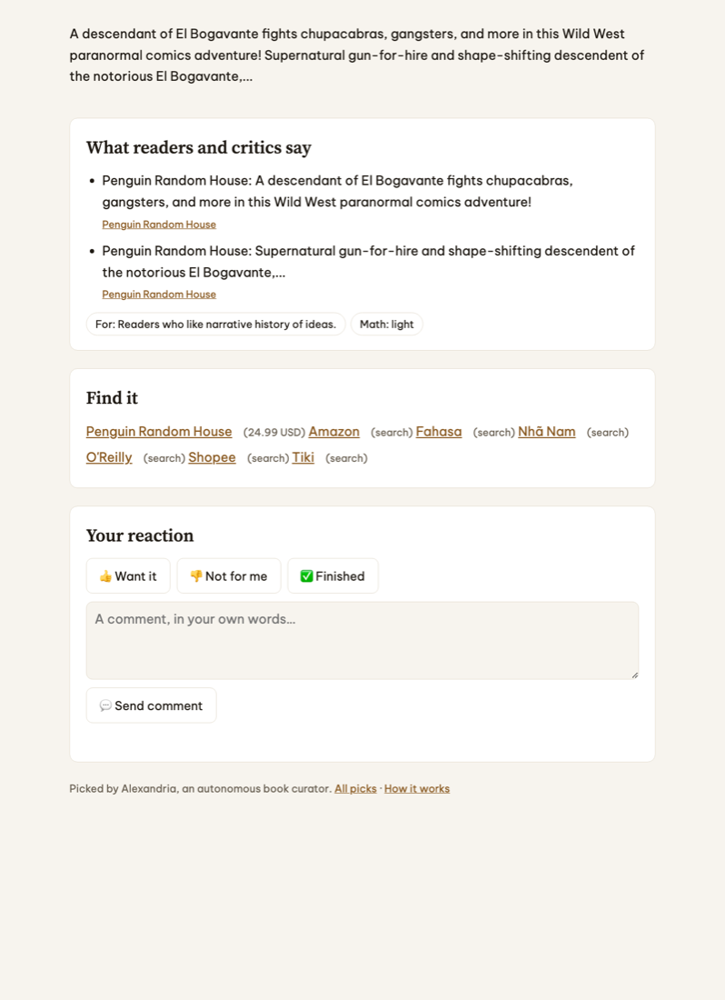

Accounts and tools
Everything here has a free tier. Create the accounts now so later steps never stop for a sign-up.
0.1Accounts
| Account | For | Needed from |
|---|---|---|
| GitHub | A private repo for the code, Actions as the scheduler, your blog repo on Pages | Step 1 |
| Supabase | Postgres in the cloud, plus the REST endpoint the pages call | Step 9 |
| Google AI Studio | A Gemini API key: route A runs on its free tier | Step 10 |
| OpenRouter (optional) | Free models as the fallback | Step 10 |
| DeepSeek / Anthropic (optional) | Paid routes B, C, D from the design's cost table | Later |
0.2Tools on your machine
Python 3.12 through uv, and git. Nothing else: the local database comes from a pip package.
curl -LsSf https://astral.sh/uv/install.sh | sh # if you don't have uv
git --version && uv --versionProject and local database
You develop against a real Postgres on your laptop, so every SQL function you later run on Supabase has already been tested. pgserver ships Postgres 16 with pgvector inside a pip package.
1.1Folders and dependencies
mkdir -p alexandria/{alexandria/templates,config,db,tests/fixtures,.github/workflows} && cd alexandria
git init
uv venv --python 3.12 .venv && source .venv/bin/activatepsycopg[binary]==3.3.6
httpx==0.28.1
beautifulsoup4==4.15.0
pyyaml==6.0.3
jinja2==3.1.6
jsonschema==4.26.0
anthropic==2.3.0-r requirements.txt
pgserver==0.1.4.venv/
.pgdata/
__pycache__/
*.pyc
.env
.ref-*uv pip install -r requirements-dev.txt1.2The database helper
One connection in autocommit mode, the run log every stage writes to, and the Vietnam-time "today" that decides which day a pick belongs to.
"""Alexandria: an autonomous personalized book curator.""""""Database connection, schema setup and the run log."""
import datetime as dt
import os
from pathlib import Path
import psycopg
from psycopg.rows import dict_row
from psycopg.types.json import Jsonb
ROOT = Path(__file__).resolve().parent.parent
ICT = dt.timezone(dt.timedelta(hours=7))
def connect(url=None):
url = url or os.environ.get("DATABASE_URL")
if not url:
raise SystemExit("DATABASE_URL is not set (Supabase: Project Settings → Database → Connection string)")
return psycopg.connect(url, row_factory=dict_row, autocommit=True)
def init_schema(conn):
conn.execute((ROOT / "db" / "schema.sql").read_text())
def today_ict():
return dt.datetime.now(ICT).date()
def log(conn, command, stage, status, **detail):
conn.execute("insert into run_log (command, stage, status, detail) values (%s, %s, %s, %s)",
(command, stage, status, Jsonb(detail)))
def paused(conn):
row = conn.execute("select value from control where key = 'paused'").fetchone()
return bool(row) and row["value"] == "true"Schema and the owner-only functions
Every table from the design's data model, closed to the public. The daily page and the console reach the database only through alx_* functions, and each one checks the owner key first.
2.1Write the schema
Three ideas carry the security model:
- Row level security with no policies. Supabase's public API key can't read or write any table.
security definerfunctions. They run with the owner's rights, so they can write, but only afteralx_require_ownercompares the SHA-256 of the key you pass with the one stored inapp_owner.- Visitors are kept apart.
alx_reactwithout a valid key writes tovisitor_reaction, which nothing learns from.
-- Alexandria schema. Safe to run more than once (python -m alexandria db-init).
-- Works on Supabase and on plain Postgres 16. Tables are closed to the public API
-- (row level security with no policies); the console and the daily pages talk to
-- the database only through the alx_* functions at the end, which check the owner key.
create extension if not exists vector;
do $$ begin
if not exists (select 1 from pg_roles where rolname = 'anon') then create role anon nologin; end if;
if not exists (select 1 from pg_roles where rolname = 'authenticated') then create role authenticated nologin; end if;
end $$;
create table if not exists app_owner (
id int primary key default 1 check (id = 1),
key_hash text not null
);
create table if not exists control (
key text primary key,
value text not null
);
create table if not exists taste_facet (
id serial primary key,
slug text unique not null,
name text not null,
priority real not null check (priority between 0 and 1),
keywords text[] not null default '{}',
status text not null default 'active' check (status in ('active', 'paused', 'removed')),
created_at timestamptz not null default now()
);
create table if not exists taste_event (
id bigserial primary key,
facet_slug text,
kind text not null check (kind in ('add', 'reweight', 'pause', 'resume', 'remove', 'note')),
payload jsonb not null default '{}',
source text not null check (source in ('seed', 'console', 'reflection', 'comment')),
at timestamptz not null default now()
);
create table if not exists profile_version (
id serial primary key,
text text not null,
facets jsonb not null,
created_at timestamptz not null default now(),
approved_at timestamptz
);
create table if not exists tracked_site (
id serial primary key,
name text not null,
url text unique not null,
kind text not null check (kind in ('bookstore', 'publisher', 'prize', 'review')),
language text not null default 'en',
watch text[] not null default '{}',
link_pattern text,
search_template text,
mode text not null default 'pending' check (mode in ('pending', 'crawl', 'link-only')),
mode_reason text,
delay_s int not null default 10,
health text not null default 'ok',
last_crawl_at timestamptz
);
create table if not exists page_cache (
url text primary key,
site_id int references tracked_site(id) on delete cascade,
status int,
etag text,
content_hash text,
is_book boolean,
fetched_at timestamptz not null default now()
);
create table if not exists work (
id bigserial primary key,
key text unique not null,
title text not null,
authors text[] not null default '{}',
language text,
year int,
pages int,
description text,
embedding vector(768),
first_seen timestamptz not null default now()
);
create table if not exists edition (
id bigserial primary key,
work_id bigint not null references work(id) on delete cascade,
site_id int references tracked_site(id) on delete set null,
url text unique not null,
isbn13 text,
language text,
price numeric,
currency text,
rating real,
rating_count int,
published date,
fetched_at timestamptz not null default now()
);
create table if not exists review_page (
url text primary key,
site_id int references tracked_site(id) on delete cascade,
headline text not null,
description text,
published date,
fetched_at timestamptz not null default now()
);
create table if not exists evidence (
id bigserial primary key,
work_id bigint not null references work(id) on delete cascade,
kind text not null check (kind in ('rating', 'review', 'publisher')),
source_name text not null,
url text not null,
rating real,
rating_count int,
excerpt text,
fetched_at timestamptz not null default now(),
unique (work_id, kind, url)
);
-- migration for databases created before evidence was unique per kind
alter table evidence drop constraint if exists evidence_work_id_url_key;
create unique index if not exists evidence_work_id_kind_url_key on evidence (work_id, kind, url);
create table if not exists candidate (
run_date date not null,
work_id bigint not null references work(id) on delete cascade,
facet_slug text not null,
score real not null,
parts jsonb not null,
rank int not null,
primary key (run_date, work_id)
);
create table if not exists recommendation (
id serial primary key,
date date unique not null,
work_id bigint not null references work(id),
facet_slug text not null,
exploration boolean not null default false,
status text not null default 'ready' check (status in ('ready', 'held', 'published', 'skipped')),
judge jsonb,
digest jsonb not null,
why text not null,
runner_ups bigint[] not null default '{}',
page_path text,
created_at timestamptz not null default now(),
published_at timestamptz
);
create table if not exists reaction (
id bigserial primary key,
rec_id int not null references recommendation(id) on delete cascade,
kind text not null check (kind in ('want', 'not', 'finished', 'comment')),
comment text,
parsed jsonb,
at timestamptz not null default now()
);
create table if not exists visitor_reaction (
id bigserial primary key,
rec_id int not null references recommendation(id) on delete cascade,
kind text not null,
at timestamptz not null default now()
);
create table if not exists reward (
rec_id int primary key references recommendation(id) on delete cascade,
value real not null,
parts jsonb not null,
updated_at timestamptz not null default now()
);
create table if not exists bandit_state (
facet_slug text primary key,
alpha real not null,
beta real not null,
updated_at timestamptz not null default now()
);
create table if not exists proposal (
id serial primary key,
kind text not null check (kind in ('taste_text', 'taste_change', 'profile')),
payload jsonb not null,
reason text,
status text not null default 'pending' check (status in ('pending', 'approved', 'rejected', 'parsed')),
created_at timestamptz not null default now(),
decided_at timestamptz
);
create table if not exists llm_call (
id bigserial primary key,
task text not null,
provider text not null,
model text not null,
ok boolean not null,
shadow boolean not null default false,
input_tokens int,
output_tokens int,
cost_usd numeric not null default 0,
latency_ms int,
error text,
output jsonb,
at timestamptz not null default now()
);
create table if not exists run_log (
id bigserial primary key,
command text not null,
stage text not null,
status text not null,
detail jsonb not null default '{}',
at timestamptz not null default now()
);
-- Close every table to the public API.
do $$ declare t text; begin
for t in select tablename from pg_tables where schemaname = 'public' loop
execute format('alter table public.%I enable row level security', t);
execute format('revoke all on public.%I from anon, authenticated', t);
end loop;
end $$;
-- ---------- functions the console and the daily pages call ----------
create or replace function alx_is_owner(p_key text) returns boolean
language sql stable security definer set search_path = public as $$
select exists (select 1 from app_owner
where key_hash = encode(sha256(convert_to(coalesce(p_key, ''), 'UTF8')), 'hex'));
$$;
create or replace function alx_require_owner(p_key text) returns void
language plpgsql stable security definer set search_path = public as $$
begin
if not alx_is_owner(p_key) then raise exception 'not the owner' using errcode = '42501'; end if;
end $$;
create or replace function alx_console_state(p_key text) returns jsonb
language plpgsql stable security definer set search_path = public as $$
begin
perform alx_require_owner(p_key);
return jsonb_build_object(
'facets', (select coalesce(jsonb_agg(jsonb_build_object('slug', slug, 'name', name, 'priority', priority,
'keywords', keywords, 'status', status) order by priority desc, slug), '[]') from taste_facet where status <> 'removed'),
'sites', (select coalesce(jsonb_agg(jsonb_build_object('name', name, 'url', url, 'kind', kind, 'mode', mode,
'mode_reason', mode_reason, 'health', health, 'last_crawl_at', last_crawl_at) order by name), '[]') from tracked_site),
'proposals', (select coalesce(jsonb_agg(jsonb_build_object('id', id, 'kind', kind, 'payload', payload, 'reason', reason,
'created_at', created_at) order by id), '[]') from proposal where status = 'pending' and kind <> 'taste_text'),
'picks', (select coalesce(jsonb_agg(p order by p->>'date' desc), '[]') from (
select jsonb_build_object('id', r.id, 'date', r.date, 'title', w.title, 'status', r.status, 'page', r.page_path,
'reactions', (select coalesce(jsonb_agg(x.kind order by x.at), '[]') from reaction x where x.rec_id = r.id)) p
from recommendation r join work w on w.id = r.work_id order by r.date desc limit 14) q),
'paused', coalesce((select value from control where key = 'paused'), 'false'),
'spend_7d', (select coalesce(round(sum(cost_usd), 4), 0) from llm_call where at > now() - interval '7 days'),
'runs', (select coalesce(jsonb_agg(jsonb_build_object('at', at, 'command', command, 'stage', stage, 'status', status,
'detail', detail) order by at desc), '[]') from (select * from run_log order by at desc limit 8) l)
);
end $$;
create or replace function alx_set_facet(p_key text, p_slug text, p_name text, p_priority real,
p_keywords text[], p_status text) returns void
language plpgsql security definer set search_path = public as $$
declare existed boolean;
begin
perform alx_require_owner(p_key);
select exists (select 1 from taste_facet where slug = p_slug) into existed;
insert into taste_facet (slug, name, priority, keywords, status)
values (p_slug, p_name, p_priority, coalesce(p_keywords, '{}'), coalesce(p_status, 'active'))
on conflict (slug) do update set name = excluded.name, priority = excluded.priority,
keywords = excluded.keywords, status = excluded.status;
insert into taste_event (facet_slug, kind, payload, source)
values (p_slug, case when not existed then 'add' when p_status = 'paused' then 'pause'
when p_status = 'removed' then 'remove' else 'reweight' end,
jsonb_build_object('name', p_name, 'priority', p_priority, 'keywords', p_keywords, 'status', p_status), 'console');
end $$;
create or replace function alx_note_taste(p_key text, p_text text) returns void
language plpgsql security definer set search_path = public as $$
begin
perform alx_require_owner(p_key);
insert into proposal (kind, payload, reason) values ('taste_text', jsonb_build_object('text', left(p_text, 2000)), 'console note');
end $$;
create or replace function alx_add_site(p_key text, p_name text, p_url text, p_kind text, p_language text,
p_watch text[], p_link_pattern text, p_search_template text) returns void
language plpgsql security definer set search_path = public as $$
begin
perform alx_require_owner(p_key);
insert into tracked_site (name, url, kind, language, watch, link_pattern, search_template, mode)
values (p_name, rtrim(p_url, '/'), p_kind, coalesce(p_language, 'en'), coalesce(p_watch, '{}'), p_link_pattern, p_search_template, 'pending')
on conflict (url) do update set name = excluded.name, kind = excluded.kind, language = excluded.language,
watch = excluded.watch, link_pattern = excluded.link_pattern, search_template = excluded.search_template, mode = 'pending';
end $$;
create or replace function alx_remove_site(p_key text, p_url text) returns void
language plpgsql security definer set search_path = public as $$
begin
perform alx_require_owner(p_key);
delete from tracked_site where url = rtrim(p_url, '/');
end $$;
create or replace function alx_decide_proposal(p_key text, p_id int, p_approve boolean) returns void
language plpgsql security definer set search_path = public as $$
declare p proposal;
begin
perform alx_require_owner(p_key);
select * into p from proposal where id = p_id and status = 'pending' for update;
if not found then raise exception 'no pending proposal %', p_id; end if;
if p_approve and p.kind = 'taste_change' then
insert into taste_facet (slug, name, priority, keywords, status)
values (p.payload->>'slug', p.payload->>'name', (p.payload->>'priority')::real,
array(select jsonb_array_elements_text(coalesce(p.payload->'keywords', '[]'))), coalesce(p.payload->>'status', 'active'))
on conflict (slug) do update set name = excluded.name, priority = excluded.priority,
keywords = case when cardinality(excluded.keywords) > 0 then excluded.keywords else taste_facet.keywords end,
status = excluded.status;
insert into taste_event (facet_slug, kind, payload, source) values (p.payload->>'slug', 'reweight', p.payload, 'reflection');
elsif p_approve and p.kind = 'profile' then
insert into profile_version (text, facets, approved_at)
values (p.payload->>'text', (select coalesce(jsonb_agg(to_jsonb(f)), '[]') from taste_facet f where status = 'active'), now());
end if;
update proposal set status = case when p_approve then 'approved' else 'rejected' end, decided_at = now() where id = p_id;
end $$;
create or replace function alx_react(p_key text, p_rec_id int, p_kind text, p_comment text) returns text
language plpgsql security definer set search_path = public as $$
begin
if p_kind not in ('want', 'not', 'finished', 'comment') then raise exception 'unknown reaction %', p_kind; end if;
if alx_is_owner(p_key) then
insert into reaction (rec_id, kind, comment) values (p_rec_id, p_kind, left(p_comment, 2000));
return 'owner';
end if;
if p_kind <> 'comment' then
insert into visitor_reaction (rec_id, kind) values (p_rec_id, p_kind);
end if;
return 'visitor';
end $$;
create or replace function alx_set_pick_status(p_key text, p_date date, p_status text) returns void
language plpgsql security definer set search_path = public as $$
begin
perform alx_require_owner(p_key);
if p_status not in ('ready', 'held', 'skipped') then raise exception 'bad status %', p_status; end if;
update recommendation set status = p_status where date = p_date and status <> 'published';
end $$;
create or replace function alx_set_paused(p_key text, p_paused boolean) returns void
language plpgsql security definer set search_path = public as $$
begin
perform alx_require_owner(p_key);
insert into control (key, value) values ('paused', p_paused::text)
on conflict (key) do update set value = excluded.value;
end $$;
revoke all on function alx_is_owner(text), alx_require_owner(text) from public, anon, authenticated;
grant execute on function alx_console_state(text), alx_set_facet(text, text, text, real, text[], text),
alx_note_taste(text, text), alx_add_site(text, text, text, text, text, text[], text, text), alx_remove_site(text, text),
alx_decide_proposal(text, int, boolean), alx_react(text, int, text, text), alx_set_pick_status(text, date, text),
alx_set_paused(text, boolean) to anon, authenticated;2.2Create it locally and make the owner key
Commands come from the CLI you write in Step 8; download the zip to run them now, or copy Step 8's __main__.py first.
eval "$(python -m alexandria dev-db)" # starts Postgres in ./.pgdata and exports DATABASE_URL
python -m alexandria db-init
python -m alexandria db-init # run it twice: the schema must be safe to re-run
python -m alexandria owner-keyschema ready
schema ready
Owner key (shown once; paste it into the console page):
<your key, printed once>2.3Prove the doors are locked
These tests switch to Supabase's anon role, exactly what a stranger's browser gets, and try to get in.
"""Test helpers: a fresh database per test module on the local pgserver."""
import atexit
from pathlib import Path
import pgserver
import psycopg
import yaml
from alexandria import db
ROOT = Path(__file__).resolve().parent.parent
FIXTURES = ROOT / "tests" / "fixtures"
def fresh_db(name):
server = pgserver.get_server(str(ROOT / ".pgdata"), cleanup_mode=None)
base = server.get_uri()
with psycopg.connect(base, autocommit=True) as admin:
admin.execute(f"drop database if exists {name} with (force)")
admin.execute(f"create database {name}")
url = base.replace("/postgres?", f"/{name}?")
conn = db.connect(url)
atexit.register(conn.close)
db.init_schema(conn)
return conn
def seed(conn, owner_key="test-owner-key"):
seeds = yaml.safe_load((ROOT / "config" / "seeds.yaml").read_text())
for f in seeds["facets"]:
conn.execute("insert into taste_facet (slug, name, priority, keywords) values (%s,%s,%s,%s)",
(f["slug"], f["name"], f["priority"], f["keywords"]))
for s in seeds["sites"]:
conn.execute("insert into tracked_site (name, url, kind, language, watch, link_pattern, search_template, mode) "
"values (%s,%s,%s,%s,%s,%s,%s,%s)",
(s["name"], s["url"], s["kind"], s["language"], s.get("watch", []), s.get("link_pattern"),
s.get("search_template"), s.get("mode", "crawl")))
conn.execute("insert into app_owner (id, key_hash) values (1, encode(sha256(convert_to(%s, 'UTF8')), 'hex'))", (owner_key,))
return owner_key
def site(conn, name):
return conn.execute("select * from tracked_site where name = %s", (name,)).fetchone()"""The public API surface: anonymous visitors can call the alx_* functions and nothing else."""
import unittest
import psycopg
from tests.util import fresh_db, seed
class SqlSecurityTest(unittest.TestCase):
@classmethod
def setUpClass(cls):
cls.conn = fresh_db("alx_test_sql")
cls.key = seed(cls.conn)
work = cls.conn.execute("insert into work (key, title) values ('k', 'A Book') returning id").fetchone()["id"]
cls.rec = cls.conn.execute("insert into recommendation (date, work_id, facet_slug, digest, why) "
"values (current_date, %s, 'physics-history', '{}', 'why') returning id", (work,)).fetchone()["id"]
def as_anon(self, sql, params=()):
with self.conn.transaction():
self.conn.execute("set local role anon")
return self.conn.execute(sql, params).fetchone()
def test_tables_are_closed(self):
with self.assertRaises(psycopg.errors.InsufficientPrivilege):
self.as_anon("select * from reaction")
def test_console_needs_the_key(self):
with self.assertRaises(psycopg.errors.InsufficientPrivilege):
self.as_anon("select alx_console_state('wrong')")
state = self.as_anon("select alx_console_state(%s) as s", (self.key,))["s"]
self.assertGreaterEqual(len(state["facets"]), 9)
def test_owner_and_visitor_reactions_are_kept_apart(self):
self.assertEqual(self.as_anon("select alx_react(%s, %s, 'want', null) as w", (self.key, self.rec))["w"], "owner")
self.assertEqual(self.as_anon("select alx_react('', %s, 'not', null) as w", (self.rec,))["w"], "visitor")
self.assertEqual(self.conn.execute("select count(*) n from reaction where rec_id = %s", (self.rec,)).fetchone()["n"], 1)
self.assertEqual(self.conn.execute("select count(*) n from visitor_reaction").fetchone()["n"], 1)
def test_key_check_is_not_public(self):
with self.assertRaises(psycopg.errors.InsufficientPrivilege):
self.as_anon("select alx_is_owner('x')")
def test_console_edits_are_recorded_as_events(self):
self.as_anon("select alx_set_facet(%s, 'chemistry-history', 'History of chemistry', 0.6, array['chemistry'], 'active')", (self.key,))
event = self.conn.execute("select * from taste_event where facet_slug = 'chemistry-history'").fetchone()
self.assertEqual((event["kind"], event["source"]), ("add", "console"))
def test_approving_a_taste_change_applies_it(self):
pid = self.conn.execute("insert into proposal (kind, payload) values ('taste_change', "
"'{\"slug\": \"philosophy\", \"name\": \"Philosophy\", \"priority\": 0.8, \"keywords\": [], \"status\": \"active\"}') "
"returning id").fetchone()["id"]
self.as_anon("select alx_decide_proposal(%s, %s, true)", (self.key, pid))
f = self.conn.execute("select priority, keywords from taste_facet where slug = 'philosophy'").fetchone()
self.assertAlmostEqual(f["priority"], 0.8, places=5)
self.assertIn("philosophy", f["keywords"]) # empty keyword list keeps the old keywords
if __name__ == "__main__":
unittest.main()python -m unittest tests.test_sql -vtest_approving_a_taste_change_applies_it (tests.test_sql.SqlSecurityTest.test_approving_a_taste_change_applies_it) ... ok
test_console_edits_are_recorded_as_events (tests.test_sql.SqlSecurityTest.test_console_edits_are_recorded_as_events) ... ok
test_console_needs_the_key (tests.test_sql.SqlSecurityTest.test_console_needs_the_key) ... ok
test_key_check_is_not_public (tests.test_sql.SqlSecurityTest.test_key_check_is_not_public) ... ok
test_owner_and_visitor_reactions_are_kept_apart (tests.test_sql.SqlSecurityTest.test_owner_and_visitor_reactions_are_kept_apart) ... ok
test_tables_are_closed (tests.test_sql.SqlSecurityTest.test_tables_are_closed) ... ok
----------------------------------------------------------------------
Ran 6 tests in 0.142s
OKSeed your tastes and tracked sites
The starting facets and the nine seed sites from the design, in one YAML file. After this step you change them from the console page, not from the file.
3.1The seed file
Each site gets the pages to watch and a regular expression that recognizes its product links. I found these by opening each site's listing page and looking at its links: that is the whole skill for adding a site later.
# Starting tastes and tracked sites. `python -m alexandria seed` loads them once;
# after that, change them from the console page, not here.
facets:
- slug: math-history
name: History and stories of mathematics
priority: 1.0
keywords: [mathematics, mathematician, mathematical, theorem, geometry, calculus, algebra, proof, number theory, statistics]
- slug: physics-history
name: History and stories of physics
priority: 1.0
keywords: [physics, physicist, quantum, relativity, atom, atomic, nuclear, cosmology, universe, einstein, particle, gravity]
- slug: science-history
name: History of other sciences
priority: 0.7
keywords: [science, scientist, scientific, biology, chemistry, medicine, evolution, discovery, darwin, genetics]
- slug: ai-cs
name: AI and computer science
priority: 0.7
keywords: [artificial intelligence, machine learning, computer, computing, software, algorithm, programming, data, robot, internet]
- slug: philosophy
name: Philosophy
priority: 0.55
keywords: [philosophy, philosopher, ethics, consciousness, meaning, stoic, reason, morality]
- slug: psychology
name: Psychology
priority: 0.55
keywords: [psychology, psychologist, behavior, behaviour, cognitive, brain, decision, emotion, habit, mind]
- slug: pulitzer
name: Pulitzer Prize winners
priority: 0.5
keywords: [pulitzer]
- slug: classics
name: Classics
priority: 0.4
keywords: [classic, classics, masterpiece, timeless]
- slug: new-releases
name: Hot new releases
priority: 0.4
keywords: [] # matched by publication date (last 12 months), not by words
sites:
- name: Penguin Random House
url: https://www.penguinrandomhouse.com
kind: publisher
language: en
watch: [https://www.penguinrandomhouse.com/books/new-releases/]
link_pattern: '/books/\d+/[a-z0-9-]+'
search_template: 'https://www.penguinrandomhouse.com/search/site?q={q}'
delay_s: 10
- name: Tiki
url: https://tiki.vn
kind: bookstore
language: vi
watch: [https://tiki.vn/sach-tieng-anh/c320]
link_pattern: '/[a-z0-9-]+-p\d+\.html'
search_template: 'https://tiki.vn/search?q={q}'
delay_s: 15
- name: Fahasa
url: https://www.fahasa.com
kind: bookstore
language: vi
watch: [https://www.fahasa.com/foreigncategory.html]
link_pattern: 'https://www\.fahasa\.com/[a-z0-9-]+\.html'
search_template: 'https://www.fahasa.com/searchengine?q={q}'
delay_s: 10
- name: Nhã Nam
url: https://nhanam.vn
kind: publisher
language: vi
watch: [https://nhanam.vn/collections/all]
link_pattern: 'nhanam\.vn/[a-z0-9-]+-\d{2,3}-000d?$' # product slugs end with the price; no structured data, so --llm reads them
search_template: 'https://nhanam.vn/search?query={q}'
delay_s: 10
- name: The Guardian books
url: https://www.theguardian.com
kind: review
language: en
watch: [https://www.theguardian.com/books/scienceandnature]
link_pattern: '/books/\d{4}/[a-z]{3}/\d{2}/[a-z0-9-]+'
delay_s: 10
- name: Pulitzer Prize
url: https://www.pulitzer.org
kind: prize
language: en
watch: [] # a prize-page parser is a later step; the facet matches "Pulitzer" in descriptions
- name: Amazon
url: https://www.amazon.com
kind: bookstore
language: en
mode: link-only # Conditions of Use forbid robots and data extraction
search_template: 'https://www.amazon.com/s?k={q}&i=stripbooks'
- name: Shopee
url: https://shopee.vn
kind: bookstore
language: vi
mode: link-only # until its terms are checked
search_template: 'https://shopee.vn/search?keyword={q}'
- name: O'Reilly
url: https://www.oreilly.com
kind: publisher
language: en
search_template: 'https://www.oreilly.com/search/?q={q}'
# no mode: the robots check sets it (its robots.txt answers bots with 403, so it becomes link-only)3.2Load it and let robots.txt decide
python -m alexandria seed
python -m alexandria sitesseeded 9 facets and 9 sites
Penguin Random House crawl robots.txt allows the watched pages
Tiki crawl robots.txt allows the watched pages
Fahasa crawl robots.txt allows the watched pages
Nhã Nam crawl robots.txt allows the watched pages
The Guardian books crawl robots.txt allows the watched pages
Pulitzer Prize crawl robots.txt allows the watched pages
O'Reilly link-only robots.txt answered 403 to a bot request
Amazon link-only set by hand in seeds.yaml
Fahasa crawl robots.txt allows the watched pages
Nhã Nam crawl robots.txt allows the watched pages
O'Reilly link-only robots.txt answered 403 to a bot request
Penguin Random House crawl robots.txt allows the watched pages
Pulitzer Prize crawl robots.txt allows the watched pages
Shopee link-only set by hand in seeds.yaml
The Guardian books crawl robots.txt allows the watched pages
Tiki crawl robots.txt allows the watched pagesThe polite crawler and the extractor
Stage 1 of the design. The crawler reads robots.txt before anything else, waits at least 10 seconds between requests to a site, revalidates pages with ETags, and never touches a page it isn't allowed to. The extractor reads the book data that stores already embed for search engines.
4.1The fetcher
"""A polite fetcher: reads robots.txt first, waits between requests, says who it is."""
import hashlib
import time
import urllib.robotparser
from urllib.parse import urlsplit
import httpx
UA_NAME = "AlexandriaBot"
UA = f"{UA_NAME}/0.1 (+https://nguyendangkhoa.info/blogs/autonomous-book-curator-hands-on.html)"
def origin(url):
parts = urlsplit(url)
return f"{parts.scheme}://{parts.netloc}"
class Crawler:
def __init__(self, conn, client=None, sleep=time.sleep, clock=time.monotonic):
self.conn, self.sleep, self.clock = conn, sleep, clock
self.client = client or httpx.Client(headers={"User-Agent": UA, "Accept-Language": "en,vi;q=0.8"},
follow_redirects=True, timeout=30)
self.robots_cache, self.last_hit = {}, {}
# ---------- robots.txt ----------
def robots(self, url):
"""Return (parser or None, status). None means: do not crawl this host."""
host = origin(url)
if host not in self.robots_cache:
try:
r = self.client.get(host + "/robots.txt")
status = r.status_code
except httpx.HTTPError:
self.robots_cache[host] = (None, 0)
return self.robots_cache[host]
parser = urllib.robotparser.RobotFileParser()
if status in (401, 403):
parser = None # the site refuses bots outright
elif status >= 500:
parser = None # unknown rules: stay away this run
elif status >= 400:
parser.parse([]) # no robots.txt: everything allowed
else:
parser.parse(r.text.splitlines())
self.robots_cache[host] = (parser, status)
return self.robots_cache[host]
def allowed(self, url):
parser, _ = self.robots(url)
return parser is not None and parser.can_fetch(UA_NAME, url)
def mode_for(self, site):
"""Decide crawl or link-only for a newly added site."""
parser, status = self.robots(site["url"])
if parser is None:
return "link-only", f"robots.txt answered {status or 'nothing'} to a bot request"
blocked = [u for u in site["watch"] if not parser.can_fetch(UA_NAME, u)]
if blocked:
return "link-only", f"robots.txt disallows {blocked[0]}"
return "crawl", "robots.txt allows the watched pages"
def delay_for(self, site):
parser, _ = self.robots(site["url"])
crawl_delay = parser.crawl_delay(UA_NAME) if parser else None
return max(site.get("delay_s") or 10, float(crawl_delay or 0))
# ---------- fetching ----------
def get(self, site, url, revalidate=True):
"""Fetch one page. Returns (status, html). html is None when unchanged, refused or failed."""
if not self.allowed(url):
return 0, None
host = origin(url)
wait = self.delay_for(site) - (self.clock() - self.last_hit.get(host, -1e9))
if wait > 0:
self.sleep(wait)
cached = self.conn.execute("select etag from page_cache where url = %s", (url,)).fetchone()
headers = {"If-None-Match": cached["etag"]} if (revalidate and cached and cached["etag"]) else {}
try:
r = self.client.get(url, headers=headers)
except httpx.HTTPError:
self.last_hit[host] = self.clock()
return 0, None
self.last_hit[host] = self.clock()
html = r.text if r.status_code == 200 else None
self.conn.execute(
"insert into page_cache (url, site_id, status, etag, content_hash, fetched_at) values (%s,%s,%s,%s,%s, now()) "
"on conflict (url) do update set status = excluded.status, etag = coalesce(excluded.etag, page_cache.etag), "
"content_hash = coalesce(excluded.content_hash, page_cache.content_hash), fetched_at = now()",
(url, site["id"], r.status_code, r.headers.get("etag"),
hashlib.sha256(html.encode()).hexdigest() if html else None))
return r.status_code, html4.2Read books out of pages
Three sources on the same page, merged: schema.org JSON-LD, the page's embedded app data, then Open Graph tags. Each seed site taught one rule:
- Penguin Random House puts a full
Bookrecord in JSON-LD, but its description sits on the page, not in the record. - Tiki has a
Bookrecord without an ISBN; the ISBN, price and rating live in__NEXT_DATA__. So sources fill each other's gaps instead of "first one wins". Its short description is often a spec list, so the full one is preferred. - Fahasa has a
Bookrecord with no ISBN at all; the ISBN appears only in the page text, so a single ISBN found there is used. - Nhã Nam has no book data at all. Those pages go to the gateway's
extractjob, which the nightly run switches on whenever a real model is configured (Step 10). - Store titles carry sales words ("Sách ngoại văn:", a price in brackets);
clean_titlestrips them.
"""Pull books and reviews out of HTML: schema.org JSON-LD first, then embedded page data, then Open Graph."""
import json
import re
from urllib.parse import urljoin
from bs4 import BeautifulSoup
ISBN13 = re.compile(r"\b97[89]\d{10}\b")
NO_AUTHOR = re.compile(r"^(nhi[eề]u t[aá]c gi[aả]|various|many authors|nhiều tác giả)$", re.I)
REVIEW_HEADLINE = re.compile(r"^(?P<title>.+?) by (?P<author>.+?) review\b", re.I)
def links(html, base, pattern):
"""Absolute URLs on the page whose path matches the site's link pattern, in page order."""
seen, out = set(), []
for href in re.findall(r'href="([^"#?]+)', html):
url = urljoin(base, href)
if re.search(pattern, url) and url not in seen:
seen.add(url)
out.append(url)
return out
def text_of(html_fragment):
return BeautifulSoup(html_fragment or "", "html.parser").get_text(" ", strip=True)
def _walk(node):
if isinstance(node, dict):
yield node
for value in node.values():
yield from _walk(value)
elif isinstance(node, list):
for value in node:
yield from _walk(value)
def _jsonld(soup):
for script in soup.find_all("script", type="application/ld+json"):
try:
yield from _walk(json.loads(script.string or script.get_text()))
except ValueError:
continue
def _types(node):
t = node.get("@type", [])
return set(t if isinstance(t, list) else [t])
def _names(value):
if isinstance(value, str):
return [n.strip() for n in re.split(r",| and ", value) if n.strip()]
if isinstance(value, dict):
return _names(value.get("name", ""))
if isinstance(value, list):
return [n for v in value for n in _names(v)]
return []
def _isbn(*values):
for value in values:
match = ISBN13.search(re.sub(r"[-\s]", "", str(value or "")))
if match:
return match.group(0)
return ""
def _from_jsonld(soup):
for node in _jsonld(soup):
types = _types(node)
if not types & {"Book", "Product"} or not node.get("name"):
continue
examples = [e for e in _walk(node.get("workExample", [])) if isinstance(e, dict)]
offers = node.get("offers") or {}
offers = offers[0] if isinstance(offers, list) and offers else offers
rating = node.get("aggregateRating") or {}
book = {"title": node["name"], "authors": _names(node.get("author")),
"isbn13": _isbn(node.get("isbn"), node.get("gtin13"), *[e.get("isbn") for e in examples]),
"pages": node.get("numberOfPages"),
"published": node.get("datePublished") or next((e["datePublished"] for e in examples if e.get("datePublished")), None),
"description": text_of(node.get("description")),
"price": offers.get("price") if isinstance(offers, dict) else None,
"currency": offers.get("priceCurrency") if isinstance(offers, dict) else None,
"rating": rating.get("ratingValue"), "rating_count": rating.get("ratingCount") or rating.get("reviewCount")}
if "Book" in types or book["isbn13"]:
return book
return None
def _from_next_data(html):
match = re.search(r'<script id="__NEXT_DATA__"[^>]*>(.*?)</script>', html, re.S)
if not match:
return None
try:
data = json.loads(match.group(1))
except ValueError:
return None
nodes = [n for n in _walk(data) if "name" in n and "price" in n and ("authors" in n or "rating_average" in n)]
nodes.sort(key=lambda n: ("specifications" not in n, -len(n))) # the full product record first
for node in nodes[:1]:
specs = {a.get("code"): a.get("value") for group in node.get("specifications") or []
for a in group.get("attributes", []) if isinstance(a, dict)}
return {"title": node["name"], "authors": _names(node.get("authors")),
"isbn13": _isbn(specs.get("isbn13"), specs.get("isbn")),
"pages": int(specs["number_of_page"]) if str(specs.get("number_of_page", "")).isdigit() else None,
"published": (specs.get("publication_date") or "")[:10] or None,
"description": text_of(node.get("description") or node.get("short_description")),
"price": node.get("price"), "currency": "VND",
"rating": node.get("rating_average") or None, "rating_count": node.get("review_count") or None}
return None
def _from_open_graph(soup):
og = {m.get("property"): m.get("content") for m in soup.find_all("meta") if m.get("property")}
if og.get("og:type") not in ("product", "book", "books.book"):
return None
title = re.split(r"\s+[|:]\s+", og.get("og:title") or "")[0].strip()
title = re.sub(r"^Mua\s+", "", title)
isbn = _isbn(og.get("og:title"), og.get("book:isbn"), og.get("books:isbn"))
if not title or not isbn:
return None
return {"title": title, "authors": [], "isbn13": isbn, "pages": None, "published": None,
"description": og.get("og:description") or "", "price": og.get("og:price:amount") or og.get("product:price:amount"),
"currency": og.get("og:price:currency") or og.get("product:price:currency"), "rating": None, "rating_count": None}
def clean_title(title):
"""Store titles carry sales words: 'Mua ', 'Sách ngoại văn: ', a price in brackets."""
title = re.sub(r"^[\s\-–•]+", "", title.strip())
title = re.sub(r"^(Mua\s+|Sách ngoại văn:\s*|Sách\s+)", "", title)
title = re.sub(r"\s+[-–]\s+Sách\b.*$", "", title)
return re.sub(r"\s*\(\s*[\d.,]+\s*(đ|vnd)?\s*\)\s*$", "", title, flags=re.I).strip(" -–")
def book_from_html(html):
"""The book a product page sells, or None when the page is not about one book."""
soup = BeautifulSoup(html, "html.parser")
found = [b for b in (_from_jsonld(soup), _from_next_data(html), _from_open_graph(soup)) if b]
book = dict(found[0]) if found else None
for other in found[1:]: # fill gaps from the other sources on the same page
for key, value in other.items():
if book.get(key) in (None, "", []) and value not in (None, "", []):
book[key] = value
if not book:
return None
book["title"] = clean_title(book["title"])
book["authors"] = [a for a in book["authors"] if not NO_AUTHOR.match(a.strip())]
if not book["isbn13"]: # some stores print the ISBN only in the page body
found = set(ISBN13.findall(soup.get_text(" ")))
book["isbn13"] = found.pop() if len(found) == 1 else ""
if not book["title"] or not (book["isbn13"] or book["authors"]):
return None
if not book["description"]:
meta = soup.find("meta", attrs={"property": "og:description"}) or soup.find("meta", attrs={"name": "description"})
book["description"] = (meta.get("content") or "").strip() if meta else ""
for key in ("price", "rating"):
try:
book[key] = float(book[key]) if book[key] not in (None, "") else None
except (TypeError, ValueError):
book[key] = None
try:
book["rating_count"] = int(book["rating_count"]) if book["rating_count"] else None
book["pages"] = int(book["pages"]) if book["pages"] else None
except (TypeError, ValueError):
book["rating_count"] = book["pages"] = None
book["published"] = (book["published"] or "")[:10] or None
return book
def review_from_html(html):
"""A critic's review page: headline, the book's title and author as the headline names them, standfirst."""
soup = BeautifulSoup(html, "html.parser")
for node in _jsonld(soup):
if _types(node) & {"NewsArticle", "Review", "Article"} and node.get("headline"):
headline = node["headline"].strip()
match = REVIEW_HEADLINE.match(headline)
og = {m.get("property"): m.get("content") for m in soup.find_all("meta") if m.get("property")}
return {"headline": headline, "book_title": match.group("title").strip() if match else None,
"book_author": match.group("author").strip() if match else None,
"description": og.get("og:description") or "",
"published": (node.get("datePublished") or "")[:10] or None}
return None4.3Turn pages into works and editions
One book found on five sites is one work with five edition rows, keyed by ISBN-13. A review site's pages go to review_page instead, to be matched to books in Step 6. Two details keep the per-site cap useful: long product slugs are fetched before short category slugs, and a page fetched in the last 14 days is skipped, so a category page wastes a slot only once.
"""Stage 1: crawl the tracked sites and turn product pages into works, editions and review pages."""
import re
import unicodedata
from psycopg.types.json import Jsonb
from . import extract
from .gateway import GatewayError
def norm(text):
text = unicodedata.normalize("NFKD", text or "").encode("ascii", "ignore").decode().lower()
return re.sub(r"[^a-z0-9]+", " ", text).strip()
def work_key(book):
if book.get("isbn13"):
return "isbn:" + book["isbn13"]
return "t:" + norm(book["title"]) + "|" + norm((book.get("authors") or [""])[0])
def check_modes(conn, crawler):
"""Give every new site a mode from its robots.txt. Sites set to link-only by hand stay link-only."""
decided = []
for site in conn.execute("select * from tracked_site where mode = 'pending'").fetchall():
mode, reason = crawler.mode_for(site)
conn.execute("update tracked_site set mode = %s, mode_reason = %s where id = %s", (mode, reason, site["id"]))
decided.append((site["name"], mode, reason))
return decided
def save_book(conn, site, url, book):
existing = None
if book.get("isbn13"):
existing = conn.execute("select work_id from edition where isbn13 = %s limit 1", (book["isbn13"],)).fetchone()
year = int(book["published"][:4]) if book.get("published") and book["published"][:4].isdigit() else None
if existing:
work_id = existing["work_id"]
else:
work_id = conn.execute(
"insert into work (key, title, authors, language, year, pages, description) values (%s,%s,%s,%s,%s,%s,%s) "
"on conflict (key) do update set description = coalesce(nullif(work.description, ''), excluded.description) "
"returning id",
(work_key(book), book["title"][:300], book.get("authors") or [], site["language"], year, book.get("pages"),
(book.get("description") or "")[:4000])).fetchone()["id"]
conn.execute(
"insert into edition (work_id, site_id, url, isbn13, language, price, currency, rating, rating_count, published) "
"values (%s,%s,%s,%s,%s,%s,%s,%s,%s,%s) on conflict (url) do update set price = excluded.price, "
"rating = excluded.rating, rating_count = excluded.rating_count, fetched_at = now()",
(work_id, site["id"], url, book.get("isbn13") or None, site["language"], book.get("price"), book.get("currency"),
book.get("rating"), book.get("rating_count"), book.get("published")))
return work_id
def run(conn, crawler, gateway=None, cap=8, refetch_days=14, use_llm=False):
"""Crawl every site in crawl mode. cap = new product pages per site per run."""
totals = {}
sites = conn.execute("select * from tracked_site where mode = 'crawl' and cardinality(watch) > 0 order by id").fetchall()
for site in sites:
stats = {"listing_pages": 0, "fetched": 0, "books": 0, "reviews": 0, "skipped": 0}
for watch_url in site["watch"]:
status, html = crawler.get(site, watch_url, revalidate=False)
if not html:
stats["skipped"] += 1
continue
stats["listing_pages"] += 1
fresh = conn.execute(
"select url from page_cache where site_id = %s and fetched_at > now() - make_interval(days => %s)",
(site["id"], refetch_days)).fetchall()
recent = {r["url"] for r in fresh}
todo = [u for u in extract.links(html, watch_url, site["link_pattern"]) if u not in recent and u != watch_url]
todo.sort(key=len, reverse=True) # long product slugs before short category slugs
for url in todo[:cap]:
status, page = crawler.get(site, url)
stats["fetched"] += 1
if not page:
continue
if site["kind"] == "review":
review = extract.review_from_html(page)
if review:
conn.execute(
"insert into review_page (url, site_id, headline, description, published) values (%s,%s,%s,%s,%s) "
"on conflict (url) do nothing",
(url, site["id"], review["headline"], review["description"], review["published"]))
stats["reviews"] += 1
continue
book = extract.book_from_html(page)
if not book and use_llm and gateway:
book = llm_extract(gateway, url, page)
conn.execute("update page_cache set is_book = %s where url = %s", (book is not None, url))
if book:
save_book(conn, site, url, book)
stats["books"] += 1
health = "ok" if stats["listing_pages"] else "listing unreachable"
conn.execute("update tracked_site set last_crawl_at = now(), health = %s where id = %s", (health, site["id"]))
totals[site["name"]] = stats
return totals
def llm_extract(gateway, url, html):
"""Last resort for pages without structured data: a small model reads the visible text."""
text = extract.text_of(html)[:6000]
try:
out = gateway.run("extract", {"url": url, "text": text})
except GatewayError:
return None
if not out["is_book"] or not out["title"]:
return None
return {"title": out["title"], "authors": out["authors"], "isbn13": out["isbn13"], "pages": None, "published": None,
"description": out["description"], "price": out["price"] or None, "currency": out["currency"] or None,
"rating": None, "rating_count": None}4.4Test it offline, then crawl for real
Save one product page per site into tests/fixtures/ (open it in a browser, save the HTML). The tests then run without the network.
import unittest
from alexandria.extract import book_from_html, clean_title, links, review_from_html
from tests.util import FIXTURES
def page(name):
return (FIXTURES / f"{name}.html").read_text()
class ExtractTest(unittest.TestCase):
def test_publisher_book_from_jsonld(self):
b = book_from_html(page("prh_book"))
self.assertEqual((b["title"], b["authors"], b["isbn13"], b["pages"]), ("The Peace", ["Romeo Dallaire"], "9780345814418", 264))
self.assertEqual(b["published"], "2026-10-20")
self.assertTrue(b["description"]) # taken from the page when the Book record has none
def test_store_book_merges_page_data(self):
b = book_from_html(page("tiki_product"))
self.assertEqual(b["isbn13"], "9781108430494") # only in the embedded product data
self.assertEqual((b["currency"], b["rating_count"], b["pages"]), ("VND", 2, 319))
def test_isbn_from_page_text_when_the_record_has_none(self):
b = book_from_html(page("fahasa_product"))
self.assertEqual((b["title"], b["authors"], b["isbn13"]), ("The Kite Runner", ["Khaled Hosseini"], "9781526604736"))
def test_page_without_book_data_needs_the_model(self):
self.assertIsNone(book_from_html(page("nhanam_product"))) # Step 10 turns on model extraction for these
def test_store_titles_lose_sales_words(self):
self.assertEqual(clean_title("Sách ngoại văn: Project Hail Mary"), "Project Hail Mary")
self.assertEqual(clean_title("Túp lều bác Tôm (205.000đ)"), "Túp lều bác Tôm")
def test_review_headline(self):
r = review_from_html(page("guardian_review"))
self.assertEqual(r["book_title"], "The Rise and Fall of the Artificial State")
self.assertEqual(r["book_author"], "Jill Lepore")
self.assertEqual(r["published"], "2026-08-19")
def test_non_book_page_is_rejected(self):
self.assertIsNone(book_from_html(page("guardian_review")))
self.assertIsNone(book_from_html("<html><head><title>Cart</title></head></html>"))
def test_links_follow_the_site_pattern(self):
found = links(page("fahasa_list"), "https://www.fahasa.com/foreigncategory.html", r"https://www\.fahasa\.com/[a-z0-9-]+\.html")
self.assertTrue(all(u.startswith("https://www.fahasa.com/") for u in found))
self.assertEqual(len(found), len(set(found)))
rel = links('<a href="/books/12/x-y">a</a><a href="/about">b</a>', "https://p.com/new/", r"/books/\d+/[a-z0-9-]+")
self.assertEqual(rel, ["https://p.com/books/12/x-y"])
if __name__ == "__main__":
unittest.main()import unittest
import httpx
from alexandria.crawl import Crawler
from tests.util import fresh_db, seed, site
def transport(robots_status=200, robots="User-agent: *\nDisallow: /search/\n", pages=None, seen=None):
def handler(request):
if seen is not None:
seen.append(request)
if request.url.path == "/robots.txt":
return httpx.Response(robots_status, text=robots)
body = (pages or {}).get(request.url.path)
if body is None:
return httpx.Response(404, text="nope")
if request.headers.get("if-none-match") == '"v1"':
return httpx.Response(304)
return httpx.Response(200, text=body, headers={"etag": '"v1"'})
return httpx.Client(transport=httpx.MockTransport(handler))
class CrawlTest(unittest.TestCase):
@classmethod
def setUpClass(cls):
cls.conn = fresh_db("alx_test_crawl")
seed(cls.conn)
def site(self, watch=("https://www.penguinrandomhouse.com/books/new-releases/",)):
return {**site(self.conn, "Penguin Random House"), "watch": list(watch)}
def test_forbidden_robots_means_link_only(self):
c = Crawler(self.conn, client=transport(robots_status=403), sleep=lambda s: None)
self.assertEqual(c.mode_for(self.site())[0], "link-only")
def test_disallowed_watch_page_means_link_only(self):
c = Crawler(self.conn, client=transport(), sleep=lambda s: None)
mode, reason = c.mode_for(self.site(["https://www.penguinrandomhouse.com/search/x"]))
self.assertEqual(mode, "link-only")
self.assertIn("disallows", reason)
def test_allowed_site_means_crawl(self):
c = Crawler(self.conn, client=transport(), sleep=lambda s: None)
self.assertEqual(c.mode_for(self.site())[0], "crawl")
def test_waits_between_requests_and_honors_crawl_delay(self):
waits, now = [], [0.0]
c = Crawler(self.conn, client=transport(robots="User-agent: *\nCrawl-delay: 20\n", pages={"/a": "A", "/b": "B"}),
sleep=lambda s: waits.append(s), clock=lambda: now[0])
s = self.site()
c.get(s, "https://www.penguinrandomhouse.com/a")
c.get(s, "https://www.penguinrandomhouse.com/b")
self.assertEqual(waits, [20.0]) # max(site delay 10, crawl-delay 20)
def test_revalidates_with_etag(self):
seen = []
c = Crawler(self.conn, client=transport(pages={"/c": "C"}, seen=seen), sleep=lambda s: None)
s = self.site()
self.assertEqual(c.get(s, "https://www.penguinrandomhouse.com/c"), (200, "C"))
self.assertEqual(c.get(s, "https://www.penguinrandomhouse.com/c"), (304, None))
self.assertEqual(seen[-1].headers.get("if-none-match"), '"v1"')
def test_never_fetches_disallowed_pages(self):
seen = []
c = Crawler(self.conn, client=transport(seen=seen), sleep=lambda s: None)
self.assertEqual(c.get(self.site(), "https://www.penguinrandomhouse.com/search/q"), (0, None))
self.assertFalse(any(r.url.path.startswith("/search") for r in seen))
if __name__ == "__main__":
unittest.main()python -m unittest tests.test_extract tests.test_crawl
python -m alexandria discover --cap 6 # 6 new product pages per site; about 7 minutes because of the waits{
"Penguin Random House": {
"listing_pages": 1,
"fetched": 6,
"books": 6,
"reviews": 0,
"skipped": 0
},
"Tiki": {
"listing_pages": 1,
"fetched": 6,
"books": 5,
"reviews": 0,
"skipped": 0
},
"Fahasa": {
"listing_pages": 1,
"fetched": 6,
"books": 6,
"reviews": 0,
"skipped": 0
},
"Nh\u00e3 Nam": {
"listing_pages": 1,
"fetched": 6,
"books": 0,
"reviews": 0,
"skipped": 0
},
"The Guardian books": {
"listing_pages": 1,
"fetched": 6,
"books": 0,
"reviews": 6,
"skipped": 0
}
}
real 5m52.804s
user 0m2.634s
…Fahasa A2 Key 1 For The Revised 2020 Exam Student's B 9781108919111 190,950 VND 5.0★ (145)
Fahasa Cambridge English Starters 2 for Revised Exam Cambridge University P 9781108464819 123,500 VND
Fahasa Cambridge English Movers 2 for Revised Exam Fr Cambridge University P 9781108464826 147,250 VND
Fahasa Cambridge IELTS 21 Academic Student's Book wit Cambridge 9781009898515 250,000 VND
Fahasa The Subtle Art of Not Giving a F*ck: A Counter Mark Manson 9780062641540 421,480 VND
Fahasa [50th Fahasa Anniversary] Oxford Advanced Lear Diana Lea, Jennifer Br 9780194095228 494,950 VND
Penguin Random House Magic Tree House Through Time and Space Boxed Mary Pope Osborne 9798217228386 40 USD
Penguin Random House Lord of the Flies William Golding 9780143139355 18 USD
Penguin Random House ¿Dónde está Nueva York? (Where Is New York? Sp Jennifer Marino Walter 9798217247295 6 USD
Penguin Random House The Mighty Thor Stan Lee, Jack Kirby, 9780143138273 30 USD
Penguin Random House Sanshiro Natsume Soseki 9780241739839 30 USD
Penguin Random House Carmen Red Claw: Belly of the Beast Mike Mignola, Rae Alle 9781506751733 25 USD
Tiki Dark Future: Uncovering the Great Reset's Terr Glenn Beck 400,000 VND
Tiki Flow: The Psychology of Optimal Experience Mihaly Csikszentmihaly 9780061339202 380,000 VND
Tiki Oxford Student's Dictionary 4th Edition 9780194406147 546,800 VND
Tiki Bài tập Bổ trợ Tiếng Anh 2 i-Learn Smart Start 9786044899077 89,000 VND
Tiki English Grammar In Use (with Answers and eBook Raymond Murphy 9781108430494 595,000 VND 5.0★ (2)
review The Ghost of the Mountains by Kulbhushansingh Suryawanshi review – the secrets of the snow leopard
review The Rise and Fall of the Artificial State by Jill Lepore review – an ominous warning of tech takeove
review ‘We have been dispossessed’: Nick Hayes on land rights and a peaceful revolution at the real Toad Ha
review Profits, Prophets, Coaches and Kings by Jared Diamond review – how to change the course of history
review What Should My Children Do? by Daniel Susskind review – the case for embracing tech in the classroom
review On the Equality of All Things by Carlo Rovelli review – a physicist’s guide to life, the universe anThe AI gateway
One function for every AI job. Routes, fallbacks, budget and shadow runs live in config/routes.yaml; the code never names a model. Every job also has a fake answer, so the whole pipeline runs offline for free.
5.1The jobs
Seven jobs, each with instructions, a strict JSON schema and an offline fake. The schemas follow the strictest provider's rules (every property required, additionalProperties: false) so the same schema works everywhere.
"""Every AI job Alexandria runs: its instructions, its JSON schema, and an offline fake.
The fake answers let the whole pipeline run with no API key (python -m alexandria nightly --fake).
Schemas follow the strictest provider rules (Claude structured outputs): every object lists all
its properties as required and sets additionalProperties to false.
"""
import hashlib
import json
import re
from dataclasses import dataclass
from typing import Callable
def obj(**props):
return {"type": "object", "properties": props, "required": list(props), "additionalProperties": False}
STR = {"type": "string"}
NUM = {"type": "number"}
INT = {"type": "integer"}
def arr(item):
return {"type": "array", "items": item}
@dataclass
class Task:
system: str
schema: dict
fake: Callable[[dict], dict]
def prompt(self, data):
return (f"Input:\n{json.dumps(data, ensure_ascii=False, indent=1)}\n\n"
f"Reply with JSON only, matching this JSON schema:\n{json.dumps(self.schema)}")
def _h(text, mod):
return int(hashlib.sha256(text.encode()).hexdigest(), 16) % mod
def _fake_extract(d):
first = d["text"].strip().split("\n")[0][:120]
return {"is_book": True, "title": first, "authors": [], "isbn13": "", "description": "", "price": 0, "currency": ""}
def _fake_judge(d):
return {"scores": [{"id": b["id"], "fit": 5 + _h(b["title"], 5), "depth": 6, "readability": 7,
"reason": f"Fake judge: {b['title']} fits {d['facet']}."} for b in d["books"]]}
def _fake_digest(d):
"""Quotes up to two sentences from each piece of evidence, citing it: no model, but a valid digest."""
sentences = []
for e in d["evidence"]:
parts = [p.strip() for p in re.split(r"(?<=[.!?])\s+", e["excerpt"]) if len(p.strip()) > 20][:2]
parts = parts or ([e["excerpt"].strip()] if e["excerpt"].strip() else [])
sentences += [{"text": f"{e['source']}: {p[:200]}", "evidence_ids": [e["id"]]} for p in parts]
return {"sentences": sentences[:4], "who_for": "Readers who like narrative history of ideas.",
"math_level": "light", "red_flags": []}
def _fake_write(d):
return {"why_you": f"It sits in your '{d['facet']}' taste, and readers rate it well.",
"intro": (d["book"].get("description") or d["book"]["title"])[:280]}
def _fake_parse_comment(d):
text = d["comment"].lower()
sentiment = 0.6 if any(w in text for w in ("great", "love", "loved", "good", "hay")) else 0.0
if any(w in text for w in ("boring", "too ", "not for", "chán")):
sentiment -= 0.6
return {"sentiment": max(-1.0, min(1.0, sentiment)), "aspects": [], "taste_suggestion": ""}
def _fake_parse_taste(d):
words = [w for w in d["text"].lower().replace(",", " ").split() if len(w) > 3][:4]
return {"slug": "-".join(words[:2]) or "new-taste", "name": d["text"][:60], "priority": 0.6,
"keywords": words, "status": "active"}
def _fake_reflect(d):
return {"profile_text": f"Fake reflection over {len(d['week'])} reactions.", "changes": []}
TASKS = {
"extract": Task(
"You read a web page from a bookstore or publisher and pull out the book it sells. "
"If the page is not about one book, set is_book to false. Use empty strings and 0 for unknown fields. "
"isbn13 must be 13 digits or empty.",
obj(is_book={"type": "boolean"}, title=STR, authors=arr(STR), isbn13=STR, description=STR, price=NUM, currency=STR),
_fake_extract),
"judge": Task(
"You choose books for one reader. Score each book against the reader's profile and today's taste facet: "
"fit (0-10, how well it matches the facet and profile), depth (0-10), readability (0-10), and one short reason. "
"Score every book in the input, using its id.",
obj(scores=arr(obj(id=INT, fit=INT, depth=INT, readability=INT, reason=STR))),
_fake_judge),
"digest": Task(
"You summarize what readers and critics say about a book, using only the evidence given. "
"Write 3 to 5 short sentences: consensus, strengths, common criticisms. Every sentence must cite the ids of "
"the evidence it comes from in evidence_ids. Never invent ratings, quotes or facts. Also say who the book is "
"for, how much math it assumes (none, light, moderate, heavy), and any red flags (dated science, disputed claims).",
obj(sentences=arr(obj(text=STR, evidence_ids=arr(INT))), who_for=STR,
math_level={"type": "string", "enum": ["none", "light", "moderate", "heavy"]}, red_flags=arr(STR)),
_fake_digest),
"write": Task(
"You write the top of a daily book page for one reader, in plain English. why_you: one sentence tying the "
"book to the reader's taste. intro: two or three sentences introducing the book, using only the input.",
obj(why_you=STR, intro=STR),
_fake_write),
"parse_comment": Task(
"You read the reader's comment on a recommended book. sentiment: -1 (hated) to 1 (loved). aspects: what the "
"comment praises (+) or criticizes (-), e.g. 'narrative', 'math density', 'length'. taste_suggestion: a short "
"suggested change to the reader's taste profile, or empty if none.",
obj(sentiment=NUM, aspects=arr(obj(name=STR, polarity={"type": "string", "enum": ["+", "-"]})), taste_suggestion=STR),
_fake_parse_comment),
"parse_taste": Task(
"You turn the reader's free-text request into one change to their taste facets. Reuse an existing slug when "
"the request adjusts an existing facet; otherwise invent a short kebab-case slug. priority is 0 to 1. "
"keywords are 3 to 10 words or phrases that would appear in a matching book's description.",
obj(slug=STR, name=STR, priority=NUM, keywords=arr(STR), status={"type": "string", "enum": ["active", "paused"]}),
_fake_parse_taste),
"reflect": Task(
"You read one week of the reader's reactions to recommended books and propose an updated taste profile. "
"profile_text: 3 to 5 plain sentences describing what they like and dislike. changes: priority changes "
"for existing facet slugs only, each with a short reason. Propose nothing when the evidence is thin.",
obj(profile_text=STR, changes=arr(obj(slug=STR, priority=NUM, reason=STR))),
_fake_reflect),
}5.2The router
- Gemini through its REST API, asking for JSON. Thinking tokens are billed as output, so the cost log counts them.
- DeepSeek and OpenRouter share one OpenAI-compatible adapter.
- Claude through the official SDK with structured outputs. Opus and Sonnet also send
fallbacks: "default", so a safety decline is retried server-side on Anthropic's recommended model before the gateway moves on. - Bad JSON gets one repair attempt; then the next model in the route takes over.
"""AI gateway: one call for every AI job, routed by config/routes.yaml.
gateway.run(task, data) returns a dict that matches the task's JSON schema. Behind it:
per-task routes with fallbacks, schema validation with one repair retry, a daily budget that
falls back to free models, a log row per call (llm_call), and optional shadow calls that run a
second model on a share of a task so models can be compared on real data.
"""
import json
import os
import random
import re
import time
from pathlib import Path
import httpx
import jsonschema
import yaml
from psycopg.types.json import Jsonb
from .tasks import TASKS
class GatewayError(Exception):
pass
def first_json(text):
"""Return the first JSON object in a reply, ignoring code fences or chatter around it."""
text = text.strip()
if text.startswith("{"):
return text
match = re.search(r"\{.*\}", text, re.S)
if not match:
raise ValueError("no JSON object in reply")
return match.group(0)
class Gateway:
def __init__(self, conn, routes="config/routes.yaml", fake=False, rng=None, http=None):
cfg = yaml.safe_load(Path(routes).read_text())
self.conn, self.fake = conn, fake
self.models, self.tasks = cfg["models"], cfg["tasks"]
self.budget = (cfg.get("budget") or {}).get("usd_per_day")
self.shadow = cfg.get("shadow") or {}
self.rng = rng or random.Random()
self.http = http or httpx.Client(timeout=120)
self._anthropic = None
# ---------- public ----------
def run(self, task, data):
route = ["fake"] if self.fake else [self.tasks[task]["model"], *self.tasks[task].get("fallback", [])]
errors = []
for name in route:
model = self.models[name]
if sum(model["price"]) > 0 and self.over_budget():
errors.append(f"{name}: daily budget spent")
continue
try:
out = self.call(task, name, data)
except GatewayError as e:
errors.append(f"{name}: {e}")
continue
self.maybe_shadow(task, name, data)
return out
raise GatewayError(f"{task}: every route failed ({'; '.join(errors)})")
def spent_today(self):
row = self.conn.execute("select coalesce(sum(cost_usd), 0) as usd from llm_call "
"where at >= date_trunc('day', now())").fetchone()
return float(row["usd"])
def over_budget(self):
return self.budget is not None and self.spent_today() >= self.budget
# ---------- one model ----------
def call(self, task, name, data, shadow=False):
spec, model = TASKS[task], self.models[name]
prompt, started = spec.prompt(data), time.time()
tokens_in = tokens_out = 0
error, out = None, None
try:
for attempt in range(2):
text, used_in, used_out = self.provider(model, task, spec, prompt, data)
tokens_in, tokens_out = tokens_in + used_in, tokens_out + used_out
try:
out = json.loads(first_json(text))
jsonschema.validate(out, spec.schema)
error = None
break
except (ValueError, jsonschema.ValidationError) as e:
error, out = f"invalid output: {str(e).splitlines()[0][:200]}", None
prompt = spec.prompt(data) + f"\n\nYour last reply was invalid ({error}). Reply with corrected JSON only."
if out is None:
raise GatewayError(error)
return out
except GatewayError as e:
error = str(e)
raise
except Exception as e: # network errors, HTTP errors, SDK errors
error = f"{type(e).__name__}: {str(e)[:200]}"
raise GatewayError(error) from e
finally:
price_in, price_out = model["price"]
keep = out if (shadow or task in self.shadow) else None
self.conn.execute(
"insert into llm_call (task, provider, model, ok, shadow, input_tokens, output_tokens, cost_usd, "
"latency_ms, error, output) values (%s,%s,%s,%s,%s,%s,%s,%s,%s,%s,%s)",
(task, model["provider"], name, out is not None, shadow, tokens_in, tokens_out,
(tokens_in * price_in + tokens_out * price_out) / 1e6, int((time.time() - started) * 1000),
error, Jsonb(keep) if keep is not None else None))
def maybe_shadow(self, task, primary, data):
cfg = self.shadow.get(task)
if self.fake or not cfg or cfg["model"] == primary or self.rng.random() >= cfg.get("share", 0):
return
try:
self.call(task, cfg["model"], data, shadow=True)
except GatewayError:
pass # a failed shadow call is logged and never blocks the pipeline
# ---------- providers ----------
def provider(self, model, task, spec, prompt, data):
kind = model["provider"]
if kind == "fake":
return json.dumps(spec.fake(data)), 0, 0
if kind == "gemini":
return self.gemini(model, spec, prompt)
if kind == "openai_compat":
return self.openai_compat(model, spec, prompt)
if kind == "anthropic":
return self.anthropic(model, spec, prompt)
raise GatewayError(f"unknown provider {kind}")
@staticmethod
def key(env):
value = os.environ.get(env)
if not value:
raise GatewayError(f"{env} is not set")
return value
def gemini(self, model, spec, prompt):
r = self.http.post(
f"https://generativelanguage.googleapis.com/v1beta/models/{model['id']}:generateContent",
headers={"x-goog-api-key": self.key(model.get("key_env", "GEMINI_API_KEY"))},
json={"systemInstruction": {"parts": [{"text": spec.system}]},
"contents": [{"role": "user", "parts": [{"text": prompt}]}],
"generationConfig": {"responseMimeType": "application/json"}})
if r.status_code != 200:
raise GatewayError(f"HTTP {r.status_code}: {r.text[:200]}")
body = r.json()
parts = body["candidates"][0]["content"]["parts"]
usage = body.get("usageMetadata", {})
# Thinking tokens are billed as output on Gemini, so count them too.
out_tokens = usage.get("candidatesTokenCount", 0) + usage.get("thoughtsTokenCount", 0)
return "".join(p.get("text", "") for p in parts), usage.get("promptTokenCount", 0), out_tokens
def openai_compat(self, model, spec, prompt):
body = {"model": model["id"], "messages": [{"role": "system", "content": spec.system},
{"role": "user", "content": prompt}]}
if model.get("json_mode", True):
body["response_format"] = {"type": "json_object"}
r = self.http.post(f"{model['base_url']}/chat/completions",
headers={"Authorization": f"Bearer {self.key(model['key_env'])}"}, json=body)
if r.status_code != 200:
raise GatewayError(f"HTTP {r.status_code}: {r.text[:200]}")
body = r.json()
usage = body.get("usage") or {}
return body["choices"][0]["message"]["content"] or "", usage.get("prompt_tokens", 0), usage.get("completion_tokens", 0)
def anthropic(self, model, spec, prompt):
import anthropic
self.key("ANTHROPIC_API_KEY")
self._anthropic = self._anthropic or anthropic.Anthropic()
output_config = {"format": {"type": "json_schema", "schema": spec.schema}}
if model.get("effort"):
output_config["effort"] = model["effort"]
request = dict(model=model["id"], max_tokens=16000, system=spec.system,
messages=[{"role": "user", "content": prompt}], output_config=output_config)
if model.get("server_fallback"):
# On a safety decline the API retries on Anthropic's recommended fallback model.
response = self._anthropic.beta.messages.create(**request, betas=["server-side-fallback-2026-07-01"],
fallbacks="default")
else:
response = self._anthropic.messages.create(**request)
if response.stop_reason == "refusal":
raise GatewayError("model declined the request")
text = next((b.text for b in response.content if b.type == "text"), "")
return text, response.usage.input_tokens, response.usage.output_tokens# AI gateway routes. Change a model here and every stage follows; no code change.
# Prices are USD per 1M tokens (input, output), checked Nov 2, 2026. Check model IDs in
# each provider's console before switching: names change faster than this file.
models:
gemini-3.8-flash: {provider: gemini, id: gemini-3.8-flash, price: [0.75, 3.75]}
gemini-3.1-flash-lite: {provider: gemini, id: gemini-3.1-flash-lite, price: [0.25, 1.50]}
deepseek-v4-pro: {provider: openai_compat, base_url: https://api.deepseek.com, key_env: DEEPSEEK_API_KEY, id: deepseek-v4-pro, price: [0.66, 1.98]}
deepseek-flash: {provider: openai_compat, base_url: https://api.deepseek.com, key_env: DEEPSEEK_API_KEY, id: deepseek-flash, price: [0.15, 0.60]}
openrouter-free: {provider: openai_compat, base_url: https://openrouter.ai/api/v1, key_env: OPENROUTER_API_KEY, id: openrouter/free, price: [0, 0], json_mode: false}
claude-opus-5.5: {provider: anthropic, id: claude-opus-5-5, price: [4, 20], effort: medium, server_fallback: true}
claude-sonnet-5.5: {provider: anthropic, id: claude-sonnet-5-5, price: [2, 10], effort: medium, server_fallback: true}
claude-haiku-5.5: {provider: anthropic, id: claude-haiku-5-5, price: [0.10, 0.50], effort: low}
fake: {provider: fake, price: [0, 0]}
# Route A from the design: free tiers first, a paid model only as the last fallback.
tasks:
extract: {model: gemini-3.1-flash-lite, fallback: [openrouter-free]}
judge: {model: gemini-3.8-flash, fallback: [openrouter-free, deepseek-v4-pro]}
digest: {model: gemini-3.8-flash, fallback: [openrouter-free, deepseek-v4-pro]}
write: {model: gemini-3.8-flash, fallback: [openrouter-free, claude-haiku-5.5]}
parse_comment: {model: gemini-3.1-flash-lite, fallback: [openrouter-free]}
parse_taste: {model: gemini-3.1-flash-lite, fallback: [openrouter-free]}
reflect: {model: gemini-3.8-flash, fallback: [claude-sonnet-5.5]}
budget:
usd_per_day: 0.50 # once spent, only free models (price 0) are tried
shadow:
judge: {model: deepseek-v4-pro, share: 0.2} # second opinion on 20% of judge calls, logged for comparison5.3Test fallback, repair, budget and shadow
import json
import random
import tempfile
import unittest
import yaml
from alexandria.gateway import Gateway, GatewayError
from tests.util import fresh_db
ROUTES = {
"models": {"broken": {"provider": "test", "price": [1, 1]}, "sloppy": {"provider": "test", "price": [1, 1]},
"paid": {"provider": "test", "price": [1000000, 1000000]}, "free": {"provider": "fake", "price": [0, 0]},
"fake": {"provider": "fake", "price": [0, 0]}},
"tasks": {"write": {"model": "broken", "fallback": ["free"]}, "judge": {"model": "sloppy", "fallback": []},
"digest": {"model": "paid", "fallback": ["free"]}, "reflect": {"model": "broken", "fallback": []}},
"budget": {"usd_per_day": 0.5},
"shadow": {"judge": {"model": "free", "share": 1.0}},
}
BOOK = {"profile": "", "facet": "physics", "book": {"title": "T", "description": "D"}, "digest_sentences": []}
class TestGateway(Gateway):
replies = []
def provider(self, model, task, spec, prompt, data):
if model["provider"] != "test":
return super().provider(model, task, spec, prompt, data)
if model is self.models["broken"]:
raise RuntimeError("HTTP 503")
return self.replies.pop(0), 100, 50
class GatewayTest(unittest.TestCase):
@classmethod
def setUpClass(cls):
cls.conn = fresh_db("alx_test_gateway")
cls.routes = tempfile.NamedTemporaryFile("w", suffix=".yaml", delete=False)
yaml.safe_dump(ROUTES, cls.routes)
cls.routes.close()
def setUp(self):
self.conn.execute("delete from llm_call")
def gw(self):
return TestGateway(self.conn, routes=self.routes.name, rng=random.Random(0))
def test_fake_answers_match_every_schema(self):
gw = Gateway(self.conn, fake=True)
out = gw.run("judge", {"profile": "", "facet": "x", "books": [{"id": 1, "title": "A"}]})
self.assertEqual(out["scores"][0]["id"], 1)
def test_falls_back_when_a_provider_fails(self):
self.assertIn("why_you", self.gw().run("write", BOOK))
row = self.conn.execute("select ok, error from llm_call where model = 'broken' order by id desc").fetchone()
self.assertFalse(row["ok"])
self.assertIn("503", row["error"])
def test_repairs_invalid_json_once(self):
TestGateway.replies = ["not json", json.dumps({"scores": []})]
self.assertEqual(self.gw().run("judge", {"profile": "", "facet": "x", "books": []}), {"scores": []})
def test_shadow_call_is_logged(self):
TestGateway.replies = [json.dumps({"scores": []})]
self.gw().run("judge", {"profile": "", "facet": "x", "books": []})
self.assertTrue(self.conn.execute("select 1 from llm_call where shadow and task = 'judge'").fetchone())
def test_budget_switches_to_free_models(self):
self.conn.execute("insert into llm_call (task, provider, model, ok, cost_usd) values ('x', 'test', 'paid', true, 5)")
out = self.gw().run("digest", {"book": {"title": "T"}, "evidence": [{"id": 1, "kind": "rating", "source": "S", "excerpt": "4.5 stars"}]})
self.assertEqual(out["sentences"][0]["evidence_ids"], [1])
self.assertFalse(self.conn.execute("select 1 from llm_call where model = 'paid' and task = 'digest'").fetchone())
def test_error_when_every_route_fails(self):
with self.assertRaises(GatewayError):
self.gw().run("reflect", {"facets": [], "week": []})
if __name__ == "__main__":
unittest.main()python -m unittest tests.test_gateway -vtest_budget_switches_to_free_models (tests.test_gateway.GatewayTest.test_budget_switches_to_free_models) ... ok
test_error_when_every_route_fails (tests.test_gateway.GatewayTest.test_error_when_every_route_fails) ... ok
test_fake_answers_match_every_schema (tests.test_gateway.GatewayTest.test_fake_answers_match_every_schema) ... ok
test_falls_back_when_a_provider_fails (tests.test_gateway.GatewayTest.test_falls_back_when_a_provider_fails) ... ok
test_repairs_invalid_json_once (tests.test_gateway.GatewayTest.test_repairs_invalid_json_once) ... ok
test_shadow_call_is_logged (tests.test_gateway.GatewayTest.test_shadow_call_is_logged) ... ok
----------------------------------------------------------------------
Ran 6 tests in 0.194s
OKShortlist and review check
Stages 2 and 3. Thompson sampling picks today's taste, a cheap score ranks books for it, the judge model reads the top 20, and the review check keeps only digest sentences that cite real evidence.
6.1Shortlist
Shortcut against the design: taste match uses the facet's keywords, not embeddings. The work.embedding column is already there; swapping in an embedding model through the gateway is a later improvement, not a rewrite.
"""Stage 2: pick today's taste facet with Thompson sampling, then shortlist books for it."""
import datetime as dt
import math
import re
from psycopg.types.json import Jsonb
PRIOR_MEAN, PRIOR_WEIGHT = 3.8, 50 # Bayesian average: 50 virtual ratings of 3.8 stars
WILDCARD_WEEKDAY = 3 # Thursday: one exploration day a week
def prior(priority):
"""Starting Beta(alpha, beta) for a facet: priority 1.0 → Beta(5, 1), priority 0.4 → Beta(2.6, 3.4)."""
return 1 + 4 * priority, 1 + 4 * (1 - priority)
def facets(conn):
return conn.execute("select * from taste_facet where status = 'active' order by priority desc, slug").fetchall()
def profile_text(conn):
row = conn.execute("select text from profile_version where approved_at is not null order by id desc limit 1").fetchone()
lines = [f"- {f['name']} (priority {f['priority']:.2f})" for f in facets(conn)]
head = row["text"] + "\n" if row else ""
return head + "Taste facets, most important first:\n" + "\n".join(lines)
def pick_facet(conn, day, rng):
"""Sample each facet's Beta posterior; the highest draw gets today's slot. Thursday is a wildcard."""
active = facets(conn)
state = {r["facet_slug"]: r for r in conn.execute("select * from bandit_state").fetchall()}
draws = []
for f in active:
a, b = (state[f["slug"]]["alpha"], state[f["slug"]]["beta"]) if f["slug"] in state else prior(f["priority"])
draws.append((rng.betavariate(a, b), f))
draws.sort(key=lambda d: -d[0])
if day.weekday() == WILDCARD_WEEKDAY and len(draws) > 3:
return rng.choice([f for _, f in draws[3:]]), True, draws
return draws[0][1], False, draws
def keyword_hits(facet, text):
hits = 0
for kw in facet["keywords"]:
hits += len(re.findall(r"\b" + re.escape(kw.lower()) + r"\b", text))
return hits
def eligible(conn):
"""Works not yet recommended, whose authors were not recommended in the last 30 days."""
return conn.execute("""
select w.*, max(e.published) as published,
(array_agg(e.rating order by e.rating_count desc nulls last))[1] as rating,
max(e.rating_count) as rating_count,
bool_or(e.language = 'vi') as sold_in_vn
from work w join edition e on e.work_id = w.id
where not exists (select 1 from recommendation r where r.work_id = w.id)
and not exists (select 1 from recommendation r join work rw on rw.id = r.work_id
where r.date > current_date - 30 and rw.authors && w.authors and cardinality(w.authors) > 0)
group by w.id""").fetchall()
def cheap_score(facet, work, day):
text = f"{work['title']} {work['title']} {work['description'] or ''}".lower()
published = work["published"]
recent = bool(published) and (day - published).days <= 365
if facet["slug"] == "new-releases":
taste = 1.0 if recent else 0.0
else:
taste = 1 - math.exp(-keyword_hits(facet, text) / 3)
if work["rating"] and work["rating_count"]:
n = work["rating_count"]
bayes = (PRIOR_WEIGHT * PRIOR_MEAN + n * work["rating"]) / (PRIOR_WEIGHT + n)
quality = max(0.0, min(1.0, (bayes - 3) / 2))
else:
quality = 0.4 # unknown: neutral, not zero
prize = 0.15 if "pulitzer" in text else 0.0
parts = {"taste": round(taste, 3), "quality": round(quality, 3), "fresh": 1.0 if recent else 0.0,
"vn": 1.0 if work["sold_in_vn"] else 0.0, "prize": prize}
score = 0.55 * taste + 0.25 * quality + 0.1 * parts["fresh"] + 0.1 * parts["vn"] + prize
return round(score, 4), parts
def run(conn, gateway, day, rng, keep=5, judge_top=20, skip=()):
"""Returns (facet, exploration, shortlist). The shortlist is ranked, best first. skip: facet slugs already tried."""
pool = eligible(conn)
facet, exploration, draws = pick_facet(conn, day, rng)
order = [f for f in [facet] + [f for _, f in draws if f["slug"] != facet["slug"]] if f["slug"] not in skip]
for f in order: # fall back to the next facet if this one has no books
scored = [(w, *cheap_score(f, w, day)) for w in pool]
scored = [s for s in scored if s[2]["taste"] > 0]
if scored:
facet = f
break
else:
return facet, exploration, []
exploration = exploration and facet is order[0]
scored.sort(key=lambda s: -s[1])
top = scored[:judge_top]
judged = gateway.run("judge", {
"profile": profile_text(conn), "facet": facet["name"],
"books": [{"id": w["id"], "title": w["title"], "authors": w["authors"], "year": w["year"],
"description": (w["description"] or "")[:700]} for w, _, _ in top]})
by_id = {s["id"]: s for s in judged["scores"]}
ranked = []
for w, cheap, parts in top:
j = by_id.get(w["id"])
judge = (0.6 * j["fit"] + 0.2 * j["depth"] + 0.2 * j["readability"]) / 10 if j else 0.0
ranked.append({"work": w, "score": round(0.5 * cheap + 0.5 * judge, 4),
"parts": {**parts, "cheap": cheap, "judge": round(judge, 3), "reason": j["reason"] if j else ""}})
ranked.sort(key=lambda r: -r["score"])
for i, r in enumerate(ranked[:keep]):
conn.execute("insert into candidate (run_date, work_id, facet_slug, score, parts, rank) values (%s,%s,%s,%s,%s,%s) "
"on conflict (run_date, work_id) do update set score = excluded.score, parts = excluded.parts, rank = excluded.rank",
(day, r["work"]["id"], facet["slug"], r["score"], Jsonb(r["parts"]), i + 1))
return facet, exploration, ranked[:keep]6.2Review check
Evidence is the store ratings, critics' reviews whose headline names the book, and the publisher's description. A sentence survives only if every ID it cites exists and it shares a content word with what it cites.
"""Stage 3: gather evidence for the top books, write a digest, and drop every sentence it can't back."""
import re
from .discover import norm
from .gateway import GatewayError
STOP = set("about after again also because been before being between book books both could does doing during each "
"from have having into itself more most other over same should some such than that their them then there "
"these they this those through under very what when where which while will with would your readers reader".split())
def words(text):
return {w for w in re.findall(r"[a-zà-ỹ]{4,}", (text or "").lower()) if w not in STOP}
def gather(conn, work):
"""Ratings from store pages, critics' reviews that name the book, and the publisher's description."""
rows = []
for e in conn.execute("select e.*, s.name as site from edition e left join tracked_site s on s.id = e.site_id "
"where e.work_id = %s and e.rating is not null and e.rating_count > 0", (work["id"],)).fetchall():
rows.append(("rating", e["site"] or "store", e["url"], e["rating"], e["rating_count"],
f"{e['rating']:.1f} out of 5 from {e['rating_count']} ratings on {e['site']}"))
title = norm(work["title"])
if len(title) >= 6:
for r in conn.execute("select rp.*, s.name as site from review_page rp join tracked_site s on s.id = rp.site_id").fetchall():
if title in norm(r["headline"]):
rows.append(("review", r["site"], r["url"], None, None, f"{r['headline']}. {r['description'] or ''}"))
publisher = conn.execute("select e.url, s.name as site from edition e left join tracked_site s on s.id = e.site_id "
"where e.work_id = %s order by (e.language = 'en') desc, e.id limit 1", (work["id"],)).fetchone()
if work["description"] and publisher:
rows.append(("publisher", publisher["site"] or "publisher", publisher["url"], None, None, work["description"][:800]))
evidence = []
for kind, source, url, rating, count, excerpt in rows:
row = conn.execute(
"insert into evidence (work_id, kind, source_name, url, rating, rating_count, excerpt) values (%s,%s,%s,%s,%s,%s,%s) "
"on conflict (work_id, kind, url) do update set rating = excluded.rating, rating_count = excluded.rating_count, "
"excerpt = excluded.excerpt, fetched_at = now() returning id",
(work["id"], kind, source, url, rating, count, excerpt)).fetchone()
evidence.append({"id": row["id"], "kind": kind, "source": source, "url": url, "excerpt": excerpt})
return evidence
def validate(digest, evidence, work):
"""Keep a sentence only if it cites real evidence and shares at least one content word with it."""
by_id = {e["id"]: e for e in evidence}
ignore = words(work["title"]) | {w for a in work["authors"] for w in words(a)}
kept, dropped = [], []
for s in digest["sentences"]:
cited = [by_id[i] for i in s["evidence_ids"] if i in by_id]
support = words(s["text"]) - ignore
backed = cited and support & set().union(*(words(e["excerpt"]) for e in cited))
(kept if backed else dropped).append({**s, "sources": [{"source": e["source"], "url": e["url"]} for e in cited]})
return {**digest, "sentences": kept, "dropped": len(dropped)}
def run(conn, gateway, shortlist, top=3, min_sentences=2):
"""Returns (best, runner_ups). best = {"work", "score", "digest", "evidence"} or None."""
reviewed = []
for item in shortlist[:top]:
work = item["work"]
evidence = gather(conn, work)
if not evidence:
continue
try:
digest = gateway.run("digest", {"book": {"title": work["title"], "authors": work["authors"],
"description": (work["description"] or "")[:800]},
"evidence": [{k: e[k] for k in ("id", "kind", "source", "excerpt")} for e in evidence]})
except GatewayError:
continue
digest = validate(digest, evidence, work)
if len(digest["sentences"]) < min_sentences:
continue
bonus = 0.05 * min(len(digest["sentences"]), 4) + (0.1 if any(e["kind"] == "review" for e in evidence) else 0)
reviewed.append({**item, "final": round(item["score"] + bonus, 4), "digest": digest, "evidence": evidence})
reviewed.sort(key=lambda r: -r["final"])
if not reviewed:
return None, []
return reviewed[0], [r["work"]["id"] for r in reviewed[1:]]import datetime as dt
import random
import unittest
from alexandria import review, shortlist
def work(**kw):
base = {"id": 1, "title": "The Making of the Atomic Bomb", "description": "A history of nuclear physics and the physicists.",
"authors": ["Richard Rhodes"], "published": dt.date(1986, 1, 1), "rating": None, "rating_count": None,
"sold_in_vn": False, "year": 1986}
return {**base, **kw}
PHYSICS = {"slug": "physics-history", "keywords": ["physics", "physicist", "nuclear", "atomic"], "priority": 1.0}
NEW = {"slug": "new-releases", "keywords": [], "priority": 0.4}
class ScoringTest(unittest.TestCase):
def test_priors_follow_priority(self):
self.assertEqual(shortlist.prior(1.0), (5.0, 1.0))
a, b = shortlist.prior(0.4)
self.assertAlmostEqual(a / (a + b), 0.4 * 4 / 6 + 1 / 6)
def test_many_ratings_beat_a_few_perfect_ones(self):
few = shortlist.cheap_score(PHYSICS, work(rating=5.0, rating_count=3), dt.date(2026, 11, 2))[1]["quality"]
many = shortlist.cheap_score(PHYSICS, work(rating=4.4, rating_count=40000), dt.date(2026, 11, 2))[1]["quality"]
self.assertGreater(many, few)
def test_new_releases_go_by_date(self):
day = dt.date(2026, 11, 2)
self.assertEqual(shortlist.cheap_score(NEW, work(published=dt.date(2026, 10, 20)), day)[1]["taste"], 1.0)
self.assertEqual(shortlist.cheap_score(NEW, work(), day)[1]["taste"], 0.0)
def test_off_topic_book_has_no_taste_match(self):
score = shortlist.cheap_score(PHYSICS, work(title="Cooking at Home", description="Recipes."), dt.date(2026, 11, 2))
self.assertEqual(score[1]["taste"], 0.0)
def test_validator_drops_unbacked_sentences(self):
evidence = [{"id": 7, "source": "Guardian", "url": "u", "excerpt": "A gripping account of the Manhattan Project scientists"}]
digest = {"sentences": [{"text": "Critics call it a gripping account.", "evidence_ids": [7]},
{"text": "Critics call it a gripping account.", "evidence_ids": [99]},
{"text": "It won three Oscars.", "evidence_ids": [7]}],
"who_for": "", "math_level": "light", "red_flags": []}
out = review.validate(digest, evidence, work())
self.assertEqual([s["text"] for s in out["sentences"]], ["Critics call it a gripping account."])
self.assertEqual(out["dropped"], 2)
if __name__ == "__main__":
unittest.main()python -m unittest tests.test_scoring -vThe daily page and the console
Stage 4. The night run stores the pick; the 07:00 run renders it into your blog checkout as plain HTML, with reaction buttons that call alx_react. The console is one static page that does everything the design's web forms promised.
7.1Publishing
The pages go to blogs/alexandria/ in your blog repo: one page per pick, an index, the console, a shared stylesheet, and config.js with your Supabase URL and public anon key. Nothing here is secret.
"""Stage 4: store today's recommendation at night, publish it as a page on the blog at 07:00."""
import datetime as dt
import json
import os
import re
import shutil
from pathlib import Path
from urllib.parse import quote_plus
from jinja2 import Environment, FileSystemLoader, select_autoescape
from psycopg.types.json import Jsonb
from .discover import norm
TEMPLATES = Path(__file__).resolve().parent / "templates"
env = Environment(loader=FileSystemLoader(TEMPLATES), autoescape=select_autoescape(["html"]))
def slugify(text):
return re.sub(r"[^a-z0-9]+", "-", norm(text)).strip("-")[:60] or "book"
def create(conn, gateway, day, facet, exploration, best, runner_ups):
work = best["work"]
wrote = gateway.run("write", {"profile": "", "facet": facet["name"],
"book": {"title": work["title"], "authors": work["authors"], "year": work["year"],
"description": (work["description"] or "")[:800]},
"digest_sentences": [s["text"] for s in best["digest"]["sentences"]]})
digest = {**best["digest"], "intro": wrote["intro"]}
return conn.execute(
"insert into recommendation (date, work_id, facet_slug, exploration, judge, digest, why, runner_ups) "
"values (%s,%s,%s,%s,%s,%s,%s,%s) on conflict (date) do nothing returning id",
(day, work["id"], facet["slug"], exploration, Jsonb(best["parts"]), Jsonb(digest), wrote["why_you"],
runner_ups)).fetchone()
def find_links(conn, work):
"""Pages where the book was found, then search links on every tracked store (including link-only ones)."""
out = []
for e in conn.execute("select e.url, e.price, e.currency, s.name from edition e join tracked_site s on s.id = e.site_id "
"where e.work_id = %s order by s.name", (work["id"],)).fetchall():
price = f"{e['price']:,.0f} {e['currency']}" if e["price"] and e["currency"] == "VND" else (
f"{e['price']:.2f} {e['currency']}" if e["price"] else "")
out.append({"label": e["name"], "url": e["url"], "note": price})
have = {o["label"] for o in out}
query = quote_plus(f"{work['title']} {(work['authors'] or [''])[0]}".strip())
for s in conn.execute("select name, search_template from tracked_site where search_template is not null "
"and kind in ('bookstore', 'publisher') order by name").fetchall():
if s["name"] not in have:
out.append({"label": s["name"], "url": s["search_template"].replace("{q}", query), "note": "search"})
return out
def vietnamese_editions(conn, work):
"""Vietnamese-language works by the same author: a likely translation, labeled as such."""
if work["language"] == "vi" or not work["authors"]:
return []
surname = norm(work["authors"][0]).split()[-1:]
rows = conn.execute("select w.title, w.authors, (select url from edition where work_id = w.id limit 1) as url "
"from work w where w.language = 'vi' and cardinality(w.authors) > 0").fetchall()
return [r for r in rows if surname and norm(r["authors"][0]).split()[-1:] == surname][:2]
def write_shared(out_dir, cfg):
out_dir.mkdir(parents=True, exist_ok=True)
(out_dir / "config.js").write_text("window.ALEXANDRIA = " + json.dumps(
{"url": cfg["supabase_url"], "anonKey": cfg["anon_key"]}) + ";\n")
for name in ("alexandria.css", "console.html"):
shutil.copyfile(TEMPLATES / name, out_dir / name)
def publish(conn, day, blog_dir, cfg):
"""Render today's pick if it is ready, mark it published, and rebuild the index. Returns the page path or None."""
out_dir = Path(blog_dir) / "blogs" / "alexandria"
write_shared(out_dir, cfg)
rec = conn.execute("select r.*, w.title, w.authors, w.year, w.pages, w.language, w.description, f.name as facet_name "
"from recommendation r join work w on w.id = r.work_id "
"left join taste_facet f on f.slug = r.facet_slug where r.date = %s", (day,)).fetchone()
page = None
if rec and rec["status"] == "ready":
page = f"picks/{day.isoformat()}-{slugify(rec['title'])}.html"
work = {"id": rec["work_id"], "title": rec["title"], "authors": rec["authors"], "language": rec["language"]}
html = env.get_template("pick.html").render(
rec=rec, digest=rec["digest"], links=find_links(conn, work), vn=vietnamese_editions(conn, work),
design_url=cfg["design_url"])
(out_dir / "picks").mkdir(exist_ok=True)
(out_dir / page).write_text(html)
conn.execute("update recommendation set status = 'published', page_path = %s, published_at = now() where id = %s",
(page, rec["id"]))
picks = conn.execute("select r.date, r.page_path, r.exploration, w.title, w.authors, f.name as facet_name "
"from recommendation r join work w on w.id = r.work_id left join taste_facet f on f.slug = r.facet_slug "
"where r.status = 'published' order by r.date desc").fetchall()
(out_dir / "index.html").write_text(env.get_template("index.html").render(picks=picks, design_url=cfg["design_url"]))
return page7.2Templates
<!doctype html>
<html lang="en">
<head>
<meta charset="utf-8">
<meta name="viewport" content="width=device-width, initial-scale=1">
<title>{{ rec.title }} — Alexandria, {{ rec.date.isoformat() }}</title>
<meta name="description" content="{{ rec.why }}">
<link rel="stylesheet" href="https://fonts.googleapis.com/css2?family=Be+Vietnam+Pro:wght@400;600&family=Source+Serif+4:opsz,wght@8..60,600&family=JetBrains+Mono&display=swap">
<link rel="stylesheet" href="../alexandria.css">
<script src="../config.js"></script>
</head>
<body>
<main class="wrap">
<div>
<span class="eyebrow">Alexandria · Book of the day · {{ rec.date.isoformat() }}{% if rec.exploration %} · wildcard day{% endif %}</span>
<h1>{{ rec.title }}</h1>
<div class="meta">{{ rec.authors | join(", ") }}{% if rec.year %} · {{ rec.year }}{% endif %}{% if rec.pages %} · {{ rec.pages }} pages{% endif %} · slot: {{ rec.facet_name or rec.facet_slug }}</div>
</div>
<p class="why">{{ rec.why }}</p>
<p>{{ digest.intro }}</p>
<section class="card">
<h2>What readers and critics say</h2>
<ul>
{% for s in digest.sentences %}
<li>{{ s.text }}<br><span class="src">{% for src in s.sources %}<a href="{{ src.url }}" rel="nofollow">{{ src.source }}</a>{% if not loop.last %} · {% endif %}{% endfor %}</span></li>
{% endfor %}
</ul>
<div class="chips">
<span class="chip">For: {{ digest.who_for }}</span>
<span class="chip">Math: {{ digest.math_level }}</span>
{% for flag in digest.red_flags %}<span class="chip">⚑ {{ flag }}</span>{% endfor %}
</div>
</section>
<section class="card">
<h2>Find it</h2>
<div class="links">
{% for l in links %}<a href="{{ l.url }}" rel="nofollow">{{ l.label }}</a>{% if l.note %}<span class="src">({{ l.note }})</span> {% endif %}{% endfor %}
</div>
{% if vn %}
<div>Possible Vietnamese edition (same author):
{% for v in vn %}<a href="{{ v.url }}" rel="nofollow">{{ v.title }}</a>{% if not loop.last %}, {% endif %}{% endfor %}</div>
{% endif %}
</section>
<section class="card react" data-rec="{{ rec.id }}">
<h2>Your reaction</h2>
<div class="buttons">
<button type="button" data-kind="want">👍 Want it</button>
<button type="button" data-kind="not">👎 Not for me</button>
<button type="button" data-kind="finished">✅ Finished</button>
</div>
<textarea id="comment" rows="3" placeholder="A comment, in your own words…"></textarea>
<div><button type="button" id="send">💬 Send comment</button></div>
<div class="status" id="status" aria-live="polite"></div>
</section>
<footer>Picked by Alexandria, an autonomous book curator. <a href="../index.html">All picks</a> · <a href="{{ design_url }}">How it works</a></footer>
</main>
<script>
(function () {
const box = document.querySelector(".react");
const status = document.getElementById("status");
const recId = Number(box.dataset.rec);
let key = "";
try { key = localStorage.getItem("alexandria-owner-key") || ""; } catch (e) {}
async function react(kind, comment) {
const cfg = window.ALEXANDRIA || {};
if (!cfg.url) { status.textContent = "Not connected yet (config.js has no Supabase URL)."; return; }
status.textContent = "Saving…";
try {
const r = await fetch(cfg.url + "/rest/v1/rpc/alx_react", {
method: "POST",
headers: { apikey: cfg.anonKey, Authorization: "Bearer " + cfg.anonKey, "Content-Type": "application/json" },
body: JSON.stringify({ p_key: key, p_rec_id: recId, p_kind: kind, p_comment: comment || null })
});
const who = await r.json();
if (!r.ok) throw new Error(who.message || r.status);
status.textContent = who === "owner" ? "Saved. Alexandria will learn from it tonight." : "Thanks! (Only the owner's reactions train Alexandria.)";
return true;
} catch (e) { status.textContent = "Could not save: " + e.message; }
}
box.querySelectorAll("[data-kind]").forEach((b) => b.addEventListener("click", async () => {
if (await react(b.dataset.kind)) b.classList.add("on");
}));
document.getElementById("send").addEventListener("click", async () => {
const text = document.getElementById("comment").value.trim();
if (text && await react("comment", text)) document.getElementById("comment").value = "";
});
})();
</script>
</body>
</html><!doctype html>
<html lang="en">
<head>
<meta charset="utf-8">
<meta name="viewport" content="width=device-width, initial-scale=1">
<title>Alexandria — book suggestions</title>
<meta name="description" content="One book a day, picked by Alexandria, an autonomous book curator that learns my taste.">
<link rel="stylesheet" href="https://fonts.googleapis.com/css2?family=Be+Vietnam+Pro:wght@400;600&family=Source+Serif+4:opsz,wght@8..60,600&display=swap">
<link rel="stylesheet" href="alexandria.css">
</head>
<body>
<main class="wrap">
<div>
<span class="eyebrow">Alexandria · book suggestions</span>
<h1>One book a day</h1>
<p class="meta">Picked by an autonomous curator that learns from my reactions. <a href="{{ design_url }}">How it works</a></p>
</div>
<div class="list">
{% for p in picks %}
<a href="{{ p.page_path }}"><div class="item">
<span class="eyebrow">{{ p.date.isoformat() }} · {{ p.facet_name }}{% if p.exploration %} · wildcard{% endif %}</span>
<div><strong>{{ p.title }}</strong> — {{ p.authors | join(", ") }}</div>
</div></a>
{% else %}
<p class="meta">No picks yet. The first one arrives at 07:00 ICT.</p>
{% endfor %}
</div>
</main>
</body>
</html><!doctype html>
<html lang="en">
<head>
<meta charset="utf-8">
<meta name="viewport" content="width=device-width, initial-scale=1">
<meta name="robots" content="noindex">
<title>Alexandria console</title>
<link rel="stylesheet" href="https://fonts.googleapis.com/css2?family=Be+Vietnam+Pro:wght@400;600&family=Source+Serif+4:opsz,wght@8..60,600&family=JetBrains+Mono&display=swap">
<link rel="stylesheet" href="alexandria.css">
<script src="config.js"></script>
<style>.wrap { max-width: 980px; } .row { display: grid; grid-template-columns: repeat(auto-fit, minmax(160px, 1fr)); gap: 8px; } td input, td select { padding: 4px 6px; }</style>
</head>
<body>
<main class="wrap">
<div><span class="eyebrow">Alexandria · owner console</span><h1>Console</h1>
<p class="meta">Everything here needs the owner key. It stays in this browser (localStorage) and is never sent anywhere except the database functions.</p></div>
<section class="card">
<h2>Owner key</h2>
<div class="row"><input id="key" type="password" placeholder="paste the key from `python -m alexandria owner-key`"><button id="save-key">Save and load</button></div>
<div class="status" id="status" aria-live="polite"></div>
</section>
<section class="card"><h2>Today and recent picks</h2>
<div class="buttons"><button id="pause"></button></div>
<table><thead><tr><th>Date</th><th>Book</th><th>Status</th><th>Reactions</th><th></th></tr></thead><tbody id="picks"></tbody></table>
</section>
<section class="card"><h2>Proposals waiting for me</h2><div id="proposals" class="list"></div></section>
<section class="card"><h2>Tastes</h2>
<table><thead><tr><th>Facet</th><th>Priority</th><th>Status</th><th>Keywords</th><th></th></tr></thead><tbody id="facets"></tbody></table>
<h3>Add a taste</h3>
<div class="row"><input id="f-slug" placeholder="slug, e.g. chemistry-history"><input id="f-name" placeholder="name"><input id="f-priority" type="number" min="0" max="1" step="0.05" value="0.6"></div>
<input id="f-keywords" placeholder="keywords, comma separated">
<div><button id="add-facet">Add taste</button></div>
<h3>Or describe it in words</h3>
<textarea id="note" rows="2" placeholder="More books like The Code Breaker; fewer textbooks"></textarea>
<div><button id="add-note">Send note (parsed tonight, then waits here for approval)</button></div>
</section>
<section class="card"><h2>Tracked sites</h2>
<table><thead><tr><th>Site</th><th>Kind</th><th>Mode</th><th>Health</th><th></th></tr></thead><tbody id="sites"></tbody></table>
<h3>Track a site</h3>
<div class="row"><input id="s-name" placeholder="name"><input id="s-url" placeholder="https://example.com"><select id="s-kind"><option>bookstore</option><option>publisher</option><option>review</option><option>prize</option></select><select id="s-lang"><option>en</option><option>vi</option></select></div>
<input id="s-watch" placeholder="pages to watch, comma separated (new releases, a category)">
<div class="row"><input id="s-pattern" placeholder="product link regex, e.g. /books/\d+/"><input id="s-search" placeholder="search link with {q}, optional"></div>
<div><button id="add-site">Track site (robots.txt decides crawl or link-only tonight)</button></div>
</section>
<section class="card"><h2>Health</h2><div id="health" class="meta"></div><table><tbody id="runs"></tbody></table></section>
</main>
<script>
(function () {
const cfg = window.ALEXANDRIA || {};
const $ = (id) => document.getElementById(id);
let key = ""; try { key = localStorage.getItem("alexandria-owner-key") || ""; } catch (e) {}
$("key").value = key;
const say = (t) => { $("status").textContent = t; };
const esc = (s) => String(s == null ? "" : s).replace(/[&<>"]/g, (c) => ({ "&": "&", "<": "<", ">": ">", '"': """ }[c]));
async function rpc(fn, args) {
const r = await fetch(cfg.url + "/rest/v1/rpc/" + fn, { method: "POST",
headers: { apikey: cfg.anonKey, Authorization: "Bearer " + cfg.anonKey, "Content-Type": "application/json" },
body: JSON.stringify(Object.assign({ p_key: key }, args || {})) });
const body = await r.json().catch(() => null);
if (!r.ok) throw new Error((body && body.message) || r.status);
return body;
}
async function act(fn, args, done) {
try { await rpc(fn, args); say(done); await load(); } catch (e) { say("Failed: " + e.message); }
}
async function load() {
if (!cfg.url) { say("config.js has no Supabase URL yet."); return; }
let s;
try { s = await rpc("alx_console_state"); } catch (e) { say("Could not load: " + e.message); return; }
say("Loaded.");
const paused = s.paused === "true";
$("pause").textContent = paused ? "▶ Resume Alexandria" : "⏸ Pause Alexandria";
$("pause").onclick = () => act("alx_set_paused", { p_paused: !paused }, paused ? "Resumed." : "Paused.");
$("picks").innerHTML = s.picks.map((p) => `<tr><td>${esc(p.date)}</td><td>${p.page ? `<a href="${esc(p.page)}">${esc(p.title)}</a>` : esc(p.title)}</td>
<td>${esc(p.status)}</td><td>${esc(p.reactions.join(", "))}</td><td>${p.status === "ready" ? `<button data-hold="${esc(p.date)}">Hold</button> <button data-skip="${esc(p.date)}">Skip</button>`
: p.status === "held" ? `<button data-ready="${esc(p.date)}">Release</button>` : ""}</td></tr>`).join("");
$("picks").querySelectorAll("[data-hold]").forEach((b) => b.onclick = () => act("alx_set_pick_status", { p_date: b.dataset.hold, p_status: "held" }, "Held."));
$("picks").querySelectorAll("[data-skip]").forEach((b) => b.onclick = () => act("alx_set_pick_status", { p_date: b.dataset.skip, p_status: "skipped" }, "Skipped."));
$("picks").querySelectorAll("[data-ready]").forEach((b) => b.onclick = () => act("alx_set_pick_status", { p_date: b.dataset.ready, p_status: "ready" }, "Released."));
$("proposals").innerHTML = s.proposals.length ? s.proposals.map((p) => `<div class="item"><span class="eyebrow">${esc(p.kind)} · ${esc(p.reason)}</span>
<pre style="white-space:pre-wrap;margin:6px 0">${esc(JSON.stringify(p.payload, null, 1))}</pre>
<button data-yes="${p.id}">Approve</button> <button data-no="${p.id}">Reject</button></div>`).join("") : '<p class="meta">Nothing waiting.</p>';
$("proposals").querySelectorAll("[data-yes]").forEach((b) => b.onclick = () => act("alx_decide_proposal", { p_id: Number(b.dataset.yes), p_approve: true }, "Approved."));
$("proposals").querySelectorAll("[data-no]").forEach((b) => b.onclick = () => act("alx_decide_proposal", { p_id: Number(b.dataset.no), p_approve: false }, "Rejected."));
$("facets").innerHTML = s.facets.map((f, i) => `<tr><td>${esc(f.name)}<br><code>${esc(f.slug)}</code></td>
<td><input data-i="${i}" class="prio" type="number" min="0" max="1" step="0.05" value="${f.priority}"></td>
<td><select data-i="${i}" class="st"><option ${f.status === "active" ? "selected" : ""}>active</option><option ${f.status === "paused" ? "selected" : ""}>paused</option><option>removed</option></select></td>
<td>${esc(f.keywords.join(", "))}</td><td><button data-save="${i}">Save</button></td></tr>`).join("");
$("facets").querySelectorAll("[data-save]").forEach((b) => b.onclick = () => {
const f = s.facets[Number(b.dataset.save)], row = b.closest("tr");
act("alx_set_facet", { p_slug: f.slug, p_name: f.name, p_priority: Number(row.querySelector(".prio").value),
p_keywords: f.keywords, p_status: row.querySelector(".st").value }, "Saved " + f.slug + ".");
});
$("sites").innerHTML = s.sites.map((x) => `<tr><td><a href="${esc(x.url)}">${esc(x.name)}</a></td><td>${esc(x.kind)}</td>
<td title="${esc(x.mode_reason)}">${esc(x.mode)}</td><td>${esc(x.health)}</td><td><button data-rm="${esc(x.url)}">Remove</button></td></tr>`).join("");
$("sites").querySelectorAll("[data-rm]").forEach((b) => b.onclick = () => confirm("Stop tracking " + b.dataset.rm + "?") && act("alx_remove_site", { p_url: b.dataset.rm }, "Removed."));
$("health").textContent = "AI spend, last 7 days: $" + s.spend_7d;
$("runs").innerHTML = s.runs.map((r) => `<tr><td>${esc(String(r.at).slice(0, 16).replace("T", " "))}</td><td>${esc(r.command)}</td><td>${esc(r.stage)}</td><td>${esc(r.status)}</td></tr>`).join("");
}
$("save-key").onclick = () => { key = $("key").value.trim(); try { localStorage.setItem("alexandria-owner-key", key); } catch (e) {} load(); };
$("add-facet").onclick = () => act("alx_set_facet", { p_slug: $("f-slug").value.trim(), p_name: $("f-name").value.trim(),
p_priority: Number($("f-priority").value), p_keywords: $("f-keywords").value.split(",").map((k) => k.trim()).filter(Boolean), p_status: "active" }, "Taste added.");
$("add-note").onclick = () => act("alx_note_taste", { p_text: $("note").value.trim() }, "Note saved; it is parsed tonight.");
$("add-site").onclick = () => act("alx_add_site", { p_name: $("s-name").value.trim(), p_url: $("s-url").value.trim(), p_kind: $("s-kind").value,
p_language: $("s-lang").value, p_watch: $("s-watch").value.split(",").map((k) => k.trim()).filter(Boolean),
p_link_pattern: $("s-pattern").value.trim() || null, p_search_template: $("s-search").value.trim() || null }, "Site added; robots.txt is checked tonight.");
if (key) load();
})();
</script>
</body>
</html>:root {
--paper: #f7f4ee; --sheet: #ffffff; --ink: #1f1a14; --muted: #6b6255; --rule: #e4ddd0;
--accent: #8a5a22; --accent-soft: #f3e7d4; --ok: #1f7a4d; --ok-soft: #e4f3ea; --warn: #a33a2b; --warn-soft: #fbe9e6;
--display: "Source Serif 4", Georgia, serif; --body: "Be Vietnam Pro", "Segoe UI", system-ui, sans-serif;
--mono: "JetBrains Mono", ui-monospace, Menlo, monospace;
}
@media (prefers-color-scheme: dark) {
:root:not([data-theme="light"]) {
--paper: #15120e; --sheet: #1e1a15; --ink: #ece4d6; --muted: #a89b88; --rule: #342d24;
--accent: #e0b070; --accent-soft: #2e2416; --ok: #6fd09c; --ok-soft: #15291f; --warn: #f08b7b; --warn-soft: #2e1916;
color-scheme: dark;
}
}
* { box-sizing: border-box; }
body { margin: 0; background: var(--paper); color: var(--ink); font: 16px/1.65 var(--body); }
a { color: var(--accent); }
.wrap { max-width: 760px; margin: 0 auto; padding: 32px max(16px, env(safe-area-inset-left)) 64px; display: grid; gap: 22px; }
.eyebrow { font-size: 12px; font-weight: 600; letter-spacing: .08em; text-transform: uppercase; color: var(--muted); }
h1 { font-family: var(--display); font-size: clamp(28px, 5vw, 40px); line-height: 1.15; margin: 4px 0 0; }
h2 { font-family: var(--display); font-size: 22px; margin: 0; }
.meta { color: var(--muted); font-size: 15px; }
.why { font-size: 18px; border-left: 3px solid var(--accent); padding-left: 14px; }
.card { background: var(--sheet); border: 1px solid var(--rule); border-radius: 10px; padding: 18px 20px; display: grid; gap: 10px; }
.card ul { margin: 0; padding-left: 20px; display: grid; gap: 8px; }
.src { font-size: 12.5px; color: var(--muted); }
.chips { display: flex; flex-wrap: wrap; gap: 6px; }
.chip { font-size: 13px; border: 1px solid var(--rule); border-radius: 999px; padding: 3px 11px; background: var(--sheet); }
.links a { display: inline-block; margin: 0 14px 6px 0; }
.react { display: grid; gap: 10px; }
.buttons { display: flex; flex-wrap: wrap; gap: 8px; }
button { font: inherit; font-size: 15px; padding: 9px 16px; border-radius: 8px; border: 1px solid var(--rule); background: var(--sheet); color: var(--ink); cursor: pointer; }
button:hover { border-color: var(--accent); }
button.on { background: var(--accent-soft); border-color: var(--accent); }
textarea, input, select { font: inherit; width: 100%; padding: 8px 10px; border-radius: 8px; border: 1px solid var(--rule); background: var(--paper); color: var(--ink); }
.status { font-size: 14px; color: var(--muted); min-height: 1.4em; }
table { border-collapse: collapse; width: 100%; font-size: 14px; }
th, td { text-align: left; padding: 7px 8px; border-bottom: 1px solid var(--rule); vertical-align: top; }
th { font-size: 12px; text-transform: uppercase; letter-spacing: .04em; color: var(--muted); }
.list { display: grid; gap: 10px; }
.list a { text-decoration: none; color: inherit; }
.list .item { background: var(--sheet); border: 1px solid var(--rule); border-radius: 10px; padding: 12px 16px; }
.list .item:hover { border-color: var(--accent); }
footer { font-size: 13px; color: var(--muted); }
code { font-family: var(--mono); font-size: .9em; }Learning, the command line, and the first full run
Stage 5 and the loop: reactions become rewards (Finished 1.0, Want it 0.6, Not for me 0.0, comments nudge by up to ±0.2), rewards update each facet's Beta posterior, and free-text notes become proposals that wait for your approval.
8.1Learn
"""Stage 5 and the loop: reactions become rewards, rewards update the facet bandit, notes become proposals."""
from psycopg.types.json import Jsonb
from .gateway import GatewayError
from .shortlist import facets, prior
REWARD = {"finished": 1.0, "want": 0.6, "not": 0.0}
COMMENT_WEIGHT = 0.2
def parse_comments(conn, gateway):
n = 0
for r in conn.execute("select x.id, x.comment, w.title from reaction x join recommendation rc on rc.id = x.rec_id "
"join work w on w.id = rc.work_id where x.kind = 'comment' and x.parsed is null").fetchall():
try:
parsed = gateway.run("parse_comment", {"comment": r["comment"] or "", "book_title": r["title"]})
except GatewayError:
continue
conn.execute("update reaction set parsed = %s where id = %s", (Jsonb(parsed), r["id"]))
if parsed["taste_suggestion"].strip():
conn.execute("insert into proposal (kind, payload, reason) values ('taste_text', %s, %s)",
(Jsonb({"text": parsed["taste_suggestion"]}), f"from a comment on {r['title']}"))
n += 1
return n
def parse_taste_notes(conn, gateway):
"""Free-text taste notes (console or comments) become concrete facet changes for me to approve."""
current = [{"slug": f["slug"], "name": f["name"], "priority": f["priority"]} for f in facets(conn)]
n = 0
for p in conn.execute("select * from proposal where kind = 'taste_text' and status = 'pending'").fetchall():
try:
change = gateway.run("parse_taste", {"text": p["payload"]["text"], "facets": current})
except GatewayError:
continue
change["priority"] = max(0.0, min(1.0, change["priority"]))
conn.execute("insert into proposal (kind, payload, reason) values ('taste_change', %s, %s)",
(Jsonb(change), f"{p['reason']}: \"{p['payload']['text'][:200]}\""))
conn.execute("update proposal set status = 'parsed', decided_at = now() where id = %s", (p["id"],))
n += 1
return n
def rewards(conn):
"""Strongest signal wins (Finished > the latest of Want it / Not for me); comments nudge it. Silence is not a signal."""
n = 0
for rec in conn.execute("select distinct rec_id from reaction").fetchall():
rows = conn.execute("select * from reaction where rec_id = %s order by at", (rec["rec_id"],)).fetchall()
kinds = [r["kind"] for r in rows if r["kind"] != "comment"]
sentiments = [r["parsed"]["sentiment"] for r in rows if r["kind"] == "comment" and r["parsed"]]
if "finished" in kinds:
base = REWARD["finished"]
elif kinds:
base = REWARD[kinds[-1]]
elif sentiments:
base = 0.5
else:
continue
nudge = COMMENT_WEIGHT * (sum(sentiments) / len(sentiments)) if sentiments else 0.0
value = max(0.0, min(1.0, base + nudge))
conn.execute("insert into reward (rec_id, value, parts) values (%s,%s,%s) on conflict (rec_id) do update "
"set value = excluded.value, parts = excluded.parts, updated_at = now()",
(rec["rec_id"], value, Jsonb({"base": base, "nudge": round(nudge, 3), "signals": kinds})))
n += 1
return n
def bandit(conn):
"""Recompute each facet's Beta posterior from its prior and every reward so far (idempotent)."""
totals = {r["facet_slug"]: r for r in conn.execute(
"select rc.facet_slug, sum(rw.value) as s, count(*) as n from reward rw join recommendation rc on rc.id = rw.rec_id "
"where not rc.exploration group by rc.facet_slug").fetchall()}
for f in facets(conn):
a, b = prior(f["priority"])
t = totals.get(f["slug"])
if t:
a, b = a + float(t["s"]), b + float(t["n"]) - float(t["s"])
conn.execute("insert into bandit_state (facet_slug, alpha, beta) values (%s,%s,%s) on conflict (facet_slug) "
"do update set alpha = excluded.alpha, beta = excluded.beta, updated_at = now()", (f["slug"], a, b))
def reflect(conn, gateway):
week = conn.execute("select w.title, rc.facet_slug as facet, x.kind, x.comment from reaction x "
"join recommendation rc on rc.id = x.rec_id join work w on w.id = rc.work_id "
"where x.at > now() - interval '7 days' order by x.at").fetchall()
if len(week) < 3:
return None # too little to say anything
out = gateway.run("reflect", {"facets": [{"slug": f["slug"], "name": f["name"], "priority": f["priority"]}
for f in facets(conn)], "week": [dict(r) for r in week]})
conn.execute("insert into proposal (kind, payload, reason) values ('profile', %s, 'weekly reflection')",
(Jsonb({"text": out["profile_text"]}),))
known = {f["slug"]: f for f in facets(conn)}
for c in out["changes"]:
if c["slug"] in known:
f = known[c["slug"]]
conn.execute("insert into proposal (kind, payload, reason) values ('taste_change', %s, %s)",
(Jsonb({"slug": f["slug"], "name": f["name"], "priority": max(0.0, min(1.0, c["priority"])),
"keywords": [], "status": f["status"]}), c["reason"]))
return out
def run(conn, gateway, weekly=False):
result = {"comments": parse_comments(conn, gateway), "taste_notes": parse_taste_notes(conn, gateway),
"rewards": rewards(conn)}
bandit(conn)
if weekly:
result["reflection"] = bool(reflect(conn, gateway))
return result8.2The command line
nightly is the whole midnight run in order: learn from yesterday, crawl (25 pages per site on Sundays, 8 otherwise), shortlist, review, store the pick. If no book in a facet survives the review check, it tries the next facet, up to four. publish is the 07:00 run.
"""Command line: python -m alexandria <command>. Run with no command for the list."""
import argparse
import datetime as dt
import json
import os
import random
import secrets
import sys
import traceback
import yaml
from pathlib import Path
from . import db, discover, learn, publish, review, shortlist
from .crawl import Crawler
from .gateway import Gateway
def cfg_from_env():
return {"supabase_url": os.environ.get("SUPABASE_URL", ""), "anon_key": os.environ.get("SUPABASE_ANON_KEY", ""),
"design_url": "https://nguyendangkhoa.info/blogs/autonomous-book-curator-system-design.html"}
def cmd_dev_db(args):
import pgserver
server = pgserver.get_server(".pgdata", cleanup_mode=None)
print(f"export DATABASE_URL='{server.get_uri()}'")
def cmd_db_init(args, conn):
db.init_schema(conn)
print("schema ready")
def cmd_owner_key(args, conn):
key = secrets.token_urlsafe(24)
conn.execute("insert into app_owner (id, key_hash) values (1, encode(sha256(convert_to(%s, 'UTF8')), 'hex')) "
"on conflict (id) do update set key_hash = excluded.key_hash", (key,))
print("Owner key (shown once; paste it into the console page):\n" + key)
def cmd_seed(args, conn):
seeds = yaml.safe_load(Path("config/seeds.yaml").read_text())
for f in seeds["facets"]:
conn.execute("insert into taste_facet (slug, name, priority, keywords) values (%s,%s,%s,%s) on conflict (slug) do nothing",
(f["slug"], f["name"], f["priority"], f["keywords"]))
conn.execute("insert into taste_event (facet_slug, kind, payload, source) select %s, 'add', '{}', 'seed' "
"where not exists (select 1 from taste_event where facet_slug = %s)", (f["slug"], f["slug"]))
for s in seeds["sites"]:
conn.execute("insert into tracked_site (name, url, kind, language, watch, link_pattern, search_template, mode, mode_reason, delay_s) "
"values (%s,%s,%s,%s,%s,%s,%s,%s,%s,%s) on conflict (url) do nothing",
(s["name"], s["url"], s["kind"], s["language"], s.get("watch", []), s.get("link_pattern"),
s.get("search_template"), s.get("mode", "pending"),
"set by hand in seeds.yaml" if s.get("mode") else None, s.get("delay_s", 10)))
learn.bandit(conn)
print(f"seeded {len(seeds['facets'])} facets and {len(seeds['sites'])} sites")
def cmd_sites(args, conn):
for name, mode, reason in discover.check_modes(conn, Crawler(conn)):
print(f"{name:22s} {mode:10s} {reason}")
for s in conn.execute("select name, mode, mode_reason from tracked_site order by name").fetchall():
print(f" {s['name']:22s} {s['mode']:10s} {s['mode_reason'] or ''}")
def cmd_discover(args, conn):
crawler = Crawler(conn)
discover.check_modes(conn, crawler)
gateway = Gateway(conn, fake=args.fake)
totals = discover.run(conn, crawler, gateway, cap=args.cap, use_llm=args.llm)
db.log(conn, "discover", "discover", "ok", **totals)
print(json.dumps(totals, indent=1))
def nightly(conn, day, fake=False, crawl=True, seed=None):
"""00:00 ICT: learn from yesterday, crawl, shortlist, review, store today's pick."""
rng = random.Random(seed if seed is not None else day.toordinal())
gateway = Gateway(conn, fake=fake, rng=rng)
weekly = day.weekday() == 6
if db.paused(conn):
db.log(conn, "nightly", "all", "paused")
return None
db.log(conn, "nightly", "learn", "ok", **learn.run(conn, gateway, weekly=weekly))
if crawl:
crawler = Crawler(conn)
discover.check_modes(conn, crawler)
db.log(conn, "nightly", "discover", "ok", **discover.run(conn, crawler, gateway, cap=25 if weekly else 8,
use_llm=not fake))
if conn.execute("select 1 from recommendation where date = %s", (day,)).fetchone():
db.log(conn, "nightly", "pick", "exists", date=str(day))
return None
tried, best = [], None
for _ in range(4): # if no book survives the review check, try the next facet
facet, exploration, top = shortlist.run(conn, gateway, day, rng, skip=tried)
db.log(conn, "nightly", "shortlist", "ok" if top else "empty", facet=facet["slug"], exploration=exploration,
candidates=[t["work"]["title"] for t in top])
if not top:
return None
best, runner_ups = review.run(conn, gateway, top)
if best:
break
db.log(conn, "nightly", "review", "nothing survived", facet=facet["slug"])
tried.append(facet["slug"])
if not best:
return None
rec = publish.create(conn, gateway, day, facet, exploration, best, runner_ups)
db.log(conn, "nightly", "pick", "ok", date=str(day), title=best["work"]["title"], facet=facet["slug"],
dropped_sentences=best["digest"]["dropped"])
return {"rec_id": rec["id"] if rec else None, "title": best["work"]["title"], "facet": facet["slug"],
"exploration": exploration, "sentences": len(best["digest"]["sentences"]), "dropped": best["digest"]["dropped"]}
def cmd_nightly(args, conn):
day = dt.date.fromisoformat(args.date) if args.date else db.today_ict()
print(json.dumps(nightly(conn, day, fake=args.fake, crawl=not args.no_crawl), indent=1, default=str))
def cmd_publish(args, conn):
day = dt.date.fromisoformat(args.date) if args.date else db.today_ict()
if db.paused(conn):
print("paused")
return
page = publish.publish(conn, day, args.blog_dir, cfg_from_env())
db.log(conn, "publish", "publish", "ok" if page else "nothing ready", page=page, date=str(day))
print(page or "nothing to publish today")
def cmd_learn(args, conn):
print(json.dumps(learn.run(conn, Gateway(conn, fake=args.fake), weekly=args.weekly), indent=1, default=str))
def cmd_status(args, conn):
q = lambda sql: conn.execute(sql).fetchone()
print("works", q("select count(*) n from work")["n"], "| editions", q("select count(*) n from edition")["n"],
"| reviews", q("select count(*) n from review_page")["n"], "| picks", q("select count(*) n from recommendation")["n"])
print("spend today $%.4f | last 7 days $%.4f" % (q("select coalesce(sum(cost_usd),0) s from llm_call where at >= date_trunc('day', now())")["s"],
q("select coalesce(sum(cost_usd),0) s from llm_call where at > now() - interval '7 days'")["s"]))
for r in conn.execute("select at, command, stage, status, detail from run_log order by at desc limit 8").fetchall():
print(f" {r['at']:%Y-%m-%d %H:%M} {r['command']:8s} {r['stage']:10s} {r['status']:16s} {json.dumps(r['detail'])[:90]}")
def main(argv=None):
p = argparse.ArgumentParser(prog="python -m alexandria")
sub = p.add_subparsers(dest="command", required=True)
sub.add_parser("dev-db", help="start a local Postgres for development (pgserver)")
sub.add_parser("db-init", help="create or update tables and functions")
sub.add_parser("owner-key", help="create (or rotate) the owner key")
sub.add_parser("seed", help="load config/seeds.yaml")
sub.add_parser("sites", help="decide crawl or link-only for new sites from robots.txt")
d = sub.add_parser("discover", help="crawl tracked sites")
d.add_argument("--cap", type=int, default=8, help="new product pages per site")
d.add_argument("--llm", action="store_true", help="use the extract model for pages without structured data")
d.add_argument("--fake", action="store_true")
n = sub.add_parser("nightly", help="00:00 ICT run: learn, crawl, shortlist, review, store the pick")
n.add_argument("--date"), n.add_argument("--fake", action="store_true"), n.add_argument("--no-crawl", action="store_true")
pub = sub.add_parser("publish", help="07:00 ICT run: render today's page into the blog checkout")
pub.add_argument("--date"), pub.add_argument("--blog-dir", default=os.environ.get("BLOG_DIR", "blog"))
l = sub.add_parser("learn", help="rewards, bandit, parse notes (part of nightly)")
l.add_argument("--fake", action="store_true"), l.add_argument("--weekly", action="store_true")
sub.add_parser("status", help="counts, spend and the last runs")
args = p.parse_args(argv)
if args.command == "dev-db":
return cmd_dev_db(args)
conn = db.connect()
try:
globals()["cmd_" + args.command.replace("-", "_")](args, conn)
except Exception as e:
traceback.print_exc()
try:
db.log(conn, args.command, "error", "failed", error=f"{type(e).__name__}: {e}"[:500])
except Exception:
pass # e.g. db-init failed before run_log existed
sys.exit(1)
if __name__ == "__main__":
main()8.3The end-to-end test and the whole suite
"""End to end, offline: books in the database → nightly (fake model) → published page → reactions → learning."""
import datetime as dt
import tempfile
import unittest
from pathlib import Path
from alexandria import discover, learn, publish
from alexandria.__main__ import nightly
from alexandria.extract import book_from_html
from tests.util import FIXTURES, fresh_db, seed, site
BOOKS = [
("The Making of the Atomic Bomb", "Richard Rhodes", "A Pulitzer Prize winning history of nuclear physics, the physicists of the Manhattan Project and the atomic age.", 4.4, 9000),
("Fermat's Last Theorem", "Simon Singh", "The story of a mathematical riddle: a theorem that defeated mathematicians for 350 years, and its proof.", 4.3, 6000),
("Hidden Figures", "Margot Lee Shetterly", "The mathematicians whose calculations sent astronauts to space; a story of science and mathematics.", 4.1, 3000),
("The Code Breaker", "Walter Isaacson", "Jennifer Doudna, gene editing and the future of the human race: a story of science and discovery.", 4.2, 5000),
("Thinking in Systems", "Donella Meadows", "A primer on systems thinking.", 4.2, 2000),
]
class PipelineTest(unittest.TestCase):
@classmethod
def setUpClass(cls):
cls.conn = fresh_db("alx_test_pipeline")
cls.key = seed(cls.conn)
tiki, prh = site(cls.conn, "Tiki"), site(cls.conn, "Penguin Random House")
discover.save_book(cls.conn, prh, "https://www.penguinrandomhouse.com/books/239736/the-peace",
book_from_html((FIXTURES / "prh_book.html").read_text()))
for i, (title, author, desc, rating, count) in enumerate(BOOKS):
discover.save_book(cls.conn, tiki if i % 2 else prh, f"https://example.test/{i}",
{"title": title, "authors": [author], "isbn13": f"978000000000{i}", "description": desc,
"pages": 300, "published": "2012-05-01", "price": 300000.0, "currency": "VND",
"rating": rating, "rating_count": count})
guardian = site(cls.conn, "The Guardian books")
cls.conn.execute("insert into review_page (url, site_id, headline, description) values (%s, %s, %s, %s)",
("https://www.theguardian.com/books/review-atomic", guardian["id"],
"The Making of the Atomic Bomb by Richard Rhodes review – the physicists who changed the world",
"A gripping, monumental history of nuclear physics and the people behind it"))
learn.bandit(cls.conn)
cls.day = dt.date(2026, 11, 2) # a Monday: no wildcard, no weekly reflection
cls.result = nightly(cls.conn, cls.day, fake=True, crawl=False, seed=1)
cls.blog = tempfile.mkdtemp()
cls.page = publish.publish(cls.conn, cls.day, cls.blog, {"supabase_url": "https://x.supabase.co", "anon_key": "anon",
"design_url": "https://example.test/design"})
def test_nightly_stores_one_pick_with_a_backed_digest(self):
self.assertIsNotNone(self.result)
rec = self.conn.execute("select * from recommendation where date = %s", (self.day,)).fetchone()
self.assertGreaterEqual(len(rec["digest"]["sentences"]), 2)
self.assertTrue(all(s["sources"] for s in rec["digest"]["sentences"]))
def test_page_is_published_with_reaction_buttons(self):
html = (Path(self.blog) / "blogs/alexandria" / self.page).read_text()
self.assertIn(self.result["title"], html)
self.assertIn('data-kind="finished"', html)
for name in ("index.html", "console.html", "config.js", "alexandria.css"):
self.assertTrue((Path(self.blog) / "blogs/alexandria" / name).exists(), name)
self.assertIn("x.supabase.co", (Path(self.blog) / "blogs/alexandria/config.js").read_text())
def test_link_only_stores_get_search_links_not_crawls(self):
html = (Path(self.blog) / "blogs/alexandria" / self.page).read_text()
self.assertIn("amazon.com/s?k=", html)
self.assertIn("shopee.vn/search?keyword=", html)
def test_reactions_become_rewards_and_move_the_bandit(self):
rec = self.conn.execute("select id, facet_slug from recommendation where date = %s", (self.day,)).fetchone()
before = self.conn.execute("select alpha from bandit_state where facet_slug = %s", (rec["facet_slug"],)).fetchone()["alpha"]
self.conn.execute("select alx_react(%s, %s, 'want', null)", (self.key, rec["id"]))
self.conn.execute("select alx_react(%s, %s, 'comment', 'Loved the story, great pick')", (self.key, rec["id"]))
learn.run(self.conn, __import__("alexandria.gateway", fromlist=["Gateway"]).Gateway(self.conn, fake=True))
reward = self.conn.execute("select value from reward where rec_id = %s", (rec["id"],)).fetchone()["value"]
self.assertAlmostEqual(reward, 0.6 + 0.2 * 0.6, places=5)
after = self.conn.execute("select alpha from bandit_state where facet_slug = %s", (rec["facet_slug"],)).fetchone()["alpha"]
self.assertAlmostEqual(after - before, reward, places=4)
def test_next_night_picks_a_different_book_and_pause_stops_everything(self):
nxt = nightly(self.conn, self.day + dt.timedelta(days=1), fake=True, crawl=False, seed=2)
self.assertIsNotNone(nxt)
self.assertNotEqual(nxt["title"], self.result["title"])
self.conn.execute("insert into control (key, value) values ('paused', 'true') on conflict (key) do update set value = 'true'")
try:
self.assertIsNone(nightly(self.conn, self.day + dt.timedelta(days=2), fake=True, crawl=False))
finally:
self.conn.execute("update control set value = 'false' where key = 'paused'")
if __name__ == "__main__":
unittest.main()touch tests/__init__.py
python -m unittest discover -s tests -t .....................................
----------------------------------------------------------------------
Ran 36 tests in 0.858s
OK8.4A full night on the books you crawled
--fake uses the offline answers instead of a model, so this costs nothing. The digest sentences below are the fake model quoting the evidence; a real model writes prose from the same evidence in Step 10.
python -m alexandria nightly --fake --no-crawl
python -m alexandria publish --blog-dir ./out
python -m alexandria status
open out/blogs/alexandria/index.html # macOS; use xdg-open on Linux{
"rec_id": 1,
"title": "Carmen Red Claw: Belly of the Beast",
"facet": "new-releases",
"exploration": false,
"sentences": 2,
"dropped": 0
}
picks/2026-11-02-carmen-red-claw-belly-of-the-beast.html
works 17 | editions 17 | reviews 6 | picks 1
spend today $0.0000 | last 7 days $0.0000
2026-11-02 11:54 publish publish ok {"date": "2026-11-02", "page": "picks/2026-11-02-carmen-red-claw-belly-of-the-beast.html"}
2026-11-02 11:54 nightly pick ok {"date": "2026-11-02", "facet": "new-releases", "title": "Carmen Red Claw: Belly of the Be
2026-11-02 11:54 nightly shortlist ok {"facet": "new-releases", "candidates": ["Carmen Red Claw: Belly of the Beast", "Magic Tre
2026-11-02 11:54 nightly review nothing survived {"facet": "classics"}
2026-11-02 11:54 nightly shortlist ok {"facet": "classics", "candidates": ["Sanshiro", "Lord of the Flies", "The Mighty Thor"],
2026-11-02 11:54 nightly review nothing survived {"facet": "physics-history"}
2026-11-02 11:54 nightly shortlist ok {"facet": "physics-history", "candidates": ["The Mighty Thor"], "exploration": false}
2026-11-02 11:54 nightly review nothing survived {"facet": "psychology"}
Deploy: Supabase, GitHub Actions, the blog token
Three services, each doing one thing: Supabase holds the data and exposes the alx_* functions, GitHub Actions runs the two daily jobs, GitHub Pages serves the pages.
9.1Create the Supabase project
- New project in the region nearest Vietnam (Singapore). Save the database password.
- Connect → Session pooler: copy that connection string as
DATABASE_URL. GitHub's runners have no IPv6, and Supabase's direct connection string is IPv6-only unless you buy the IPv4 add-on, so the pooler is the one that works from Actions. - Project Settings → API: copy the project URL (
SUPABASE_URL) and theanonpublic key (SUPABASE_ANON_KEY). Never put theservice_rolekey anywhere in this project.
# Copy to .env and fill in; `set -a; source .env; set +a` loads it into your shell.
DATABASE_URL=postgresql://postgres.<project-ref>:<password>@aws-0-<region>.pooler.supabase.com:5432/postgres
SUPABASE_URL=https://<project-ref>.supabase.co
SUPABASE_ANON_KEY=<anon public key>
GEMINI_API_KEY=
OPENROUTER_API_KEY=
DEEPSEEK_API_KEY=
ANTHROPIC_API_KEY=
BLOG_DIR=../blogcp .env.example .env # fill it in, then:
set -a; source .env; set +a
python -m alexandria db-init
python -m alexandria owner-key # a new key for production; keep it in your password manager
python -m alexandria seed
python -m alexandria sitesset role anon; select * from reaction;. It must fail with "permission denied".9.2The workflow
Two schedules in UTC: 17:00 (00:00 in Vietnam) for nightly, 00:00 (07:00 in Vietnam) for publish. The publish run checks out your blog repo, writes the pages and pushes; GitHub Pages deploys them as it does any other commit.
name: Alexandria
on:
schedule:
- cron: "0 17 * * *" # 00:00 ICT: learn, crawl, shortlist, review, store today's pick
- cron: "0 0 * * *" # 07:00 ICT: publish today's page to the blog
workflow_dispatch:
inputs:
command:
description: Which run
type: choice
options: [nightly, publish]
default: nightly
concurrency:
group: alexandria
cancel-in-progress: false
permissions:
contents: read
jobs:
run:
runs-on: ubuntu-latest
timeout-minutes: 45
env:
DATABASE_URL: ${{ secrets.DATABASE_URL }}
GEMINI_API_KEY: ${{ secrets.GEMINI_API_KEY }}
OPENROUTER_API_KEY: ${{ secrets.OPENROUTER_API_KEY }}
DEEPSEEK_API_KEY: ${{ secrets.DEEPSEEK_API_KEY }}
ANTHROPIC_API_KEY: ${{ secrets.ANTHROPIC_API_KEY }}
SUPABASE_URL: ${{ vars.SUPABASE_URL }}
SUPABASE_ANON_KEY: ${{ vars.SUPABASE_ANON_KEY }}
steps:
- uses: actions/checkout@v4
- uses: actions/setup-python@v5
with:
python-version: "3.12"
cache: pip
- run: pip install -r requirements.txt
- name: Pick the command
id: pick
run: |
if [ "${{ github.event_name }}" = "workflow_dispatch" ]; then cmd="${{ inputs.command }}"
elif [ "${{ github.event.schedule }}" = "0 0 * * *" ]; then cmd=publish
else cmd=nightly; fi
echo "cmd=$cmd" >> "$GITHUB_OUTPUT"
- name: Nightly
if: steps.pick.outputs.cmd == 'nightly'
run: python -m alexandria nightly
- name: Check out the blog
if: steps.pick.outputs.cmd == 'publish'
uses: actions/checkout@v4
with:
repository: khoa-nd/blog
token: ${{ secrets.BLOG_TOKEN }}
path: blog
- name: Publish
if: steps.pick.outputs.cmd == 'publish'
run: python -m alexandria publish --blog-dir blog
- name: Push the page
if: steps.pick.outputs.cmd == 'publish'
working-directory: blog
run: |
git config user.name "alexandria-bot"
git config user.email "alexandria-bot@users.noreply.github.com"
git add blogs/alexandria
if git diff --cached --quiet; then echo "Nothing new to publish."; exit 0; fi
git commit -m "Alexandria: book of the day $(TZ=Asia/Ho_Chi_Minh date +%F)"
git push9.3Secrets, variables and the blog token
- Create a private GitHub repo
alexandriaand push the project. - Make a fine-grained personal access token: repository access only your blog repo, permission Contents: Read and write, nothing else. Then change
repository: khoa-nd/blogin the workflow to your blog repo. - In the alexandria repo, Settings → Secrets and variables → Actions:
| Name | Kind | Value |
|---|---|---|
DATABASE_URL | secret | Supabase session pooler string |
BLOG_TOKEN | secret | The fine-grained token |
GEMINI_API_KEY | secret | Step 10 |
OPENROUTER_API_KEY, DEEPSEEK_API_KEY, ANTHROPIC_API_KEY | secret | Optional, only for routes you use |
SUPABASE_URL, SUPABASE_ANON_KEY | variable | Public by design: they end up in config.js |
git add . && git commit -m "Alexandria P1"
gh repo create alexandria --private --source . --pushShip: switch on a real model and run it once by hand
Route A from the design: Gemini's free tier for every job, OpenRouter's free router as the fallback. The default routes.yaml already says so; you only add the key.
10.1Keys and a model check
- Create a key in Google AI Studio and add it as
GEMINI_API_KEY. - Open AI Studio → Rate limits and confirm the model IDs in
routes.yamlexist on your account and what the free daily limits are. A run makes about 16 calls. - Optional: an OpenRouter key as
OPENROUTER_API_KEYfor the free fallback.
10.2First real run
In the alexandria repo: Actions → Alexandria → Run workflow, first with nightly, then with publish. Or the same from your terminal:
gh workflow run alexandria.yml -f command=nightly && gh run watch
gh workflow run alexandria.yml -f command=publish && gh run watchThen open https://<your-site>/blogs/alexandria/, open console.html in the same folder, paste the production owner key, and press a reaction button on the pick. Check it arrived:
python -m alexandria status
psql "$DATABASE_URL" -c "select model, ok, cost_usd, error from llm_call order by id desc limit 10;"llm_call shows Gemini rows with ok = true · from tomorrow, both scheduled runs appear in the Actions tab by themselves.Operate
An autonomous system still needs an operator, just not every day. This is the whole runbook.
11.1Rhythm
| When | Do | Where |
|---|---|---|
| Daily, 1 minute | React to the pick: Want it, Not for me, or a comment | The daily page |
| Daily glance | Both runs green; spend line normal | Actions tab, console Health |
| Sunday | Approve or reject the reflection and taste proposals | Console → Proposals |
| Whenever you finish a book | Press ✅ Finished on its page (it can be weeks later) | That day's page |
| Monthly | Spend per model, shadow comparison, sites' health, a backup | The SQL below |
11.2Monthly queries
-- Spend per model this month
select model, count(*) as calls, round(sum(cost_usd), 4) as usd, round(avg(latency_ms)) as ms,
round(100.0 * avg((not ok)::int), 1) as error_pct
from llm_call where at > date_trunc('month', now()) group by model order by usd desc;
-- Shadow comparison: does the shadow judge pick the same top book as the primary?
with calls as (select at, shadow, output from llm_call where task = 'judge' and ok and output is not null)
select date(p.at) as day,
(select s->>'id' from jsonb_array_elements(p.output->'scores') s order by (s->>'fit')::int desc limit 1) as primary_top,
(select s->>'id' from jsonb_array_elements(x.output->'scores') s order by (s->>'fit')::int desc limit 1) as shadow_top
from calls p join calls x on x.shadow and not p.shadow and x.at between p.at and p.at + interval '10 minutes'
order by day desc limit 30;
-- How I reacted, by facet
select r.facet_slug, count(*) as picks, round(avg(w.value)::numeric, 2) as avg_reward,
count(*) filter (where w.value >= 0.6) as liked
from recommendation r left join reward w on w.rec_id = r.id
where r.status = 'published' group by r.facet_slug order by avg_reward desc nulls last;
-- What the bandit believes now (mean = alpha / (alpha + beta))
select facet_slug, round((alpha / (alpha + beta))::numeric, 2) as mean, round((alpha + beta)::numeric, 1) as weight
from bandit_state order by mean desc;
-- Sites that need attention
select name, mode, health, last_crawl_at from tracked_site
where mode = 'crawl' and (health <> 'ok' or last_crawl_at < now() - interval '3 days');11.3Changes you will make
| Change | How |
|---|---|
| Add a taste | Console → Tastes → Add, or describe it in words and approve the proposal the next morning |
| Track a new bookstore | Console → Track a site: URL, a listing page to watch, a product-link regex. The next nightly run reads its robots.txt and sets the mode |
| Switch to a paid model | Edit config/routes.yaml (for example route B: DeepSeek), add the key secret, push. Shadow-run it first by setting shadow.judge.model |
| Go on holiday | Console → Pause. Nothing runs or publishes until you resume |
| Skip or hold today's book | Console → Today and recent picks → Hold or Skip, before 07:00 |
| Rotate the owner key | python -m alexandria owner-key against production, then paste the new key in the console |
| Back up | pg_dump "$DATABASE_URL" > alexandria-$(date +%F).sql once a month, kept outside Supabase |
Troubleshooting
| Symptom | Cause | Fix |
|---|---|---|
Actions: connection to server ... failed: Network is unreachable | Direct Supabase string, IPv6 only | Use the Session pooler string as DATABASE_URL |
| Page says "Not connected yet" | SUPABASE_URL variable not set when publish ran | Set both Actions variables, run publish again |
| Console: "Could not load: not the owner" | Local key used against production, or a rotated key | Paste the production key; rotate if lost |
| Status: shortlist "empty" | No unpicked book matches any active facet | Run discover; add sites or keywords; check sites' health |
| Status: review "nothing survived" | Too little evidence, or the model cited IDs that don't exist | Check llm_call errors; track a review site for your facets |
| A site's health is "listing unreachable" | Its listing URL moved, or it started blocking | Update the watched page in the console; if it blocks, leave it link-only |
llm_call errors: HTTP 429 | Free-tier daily limit | The route falls back by itself; add an OpenRouter key, or move one job to a paid route |
llm_call errors: HTTP 404 on Gemini | Model ID not available to your account | Use an ID listed in AI Studio in routes.yaml |
| No scheduled runs at all | The workflow file isn't on the default branch, or Actions is disabled | Push to main; enable Actions for the repo |
| Publish ran but no page on the site | Token can't push, or Pages is off | Check the push step's log; token needs Contents: write on the blog repo only |